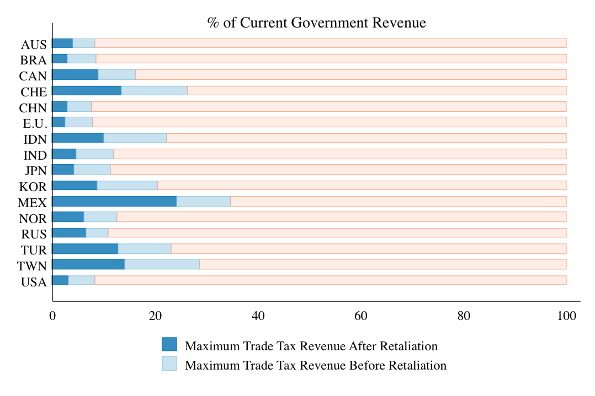
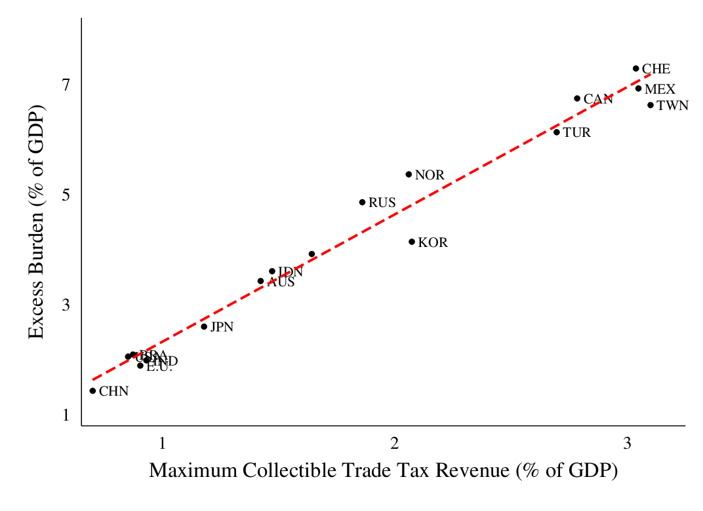
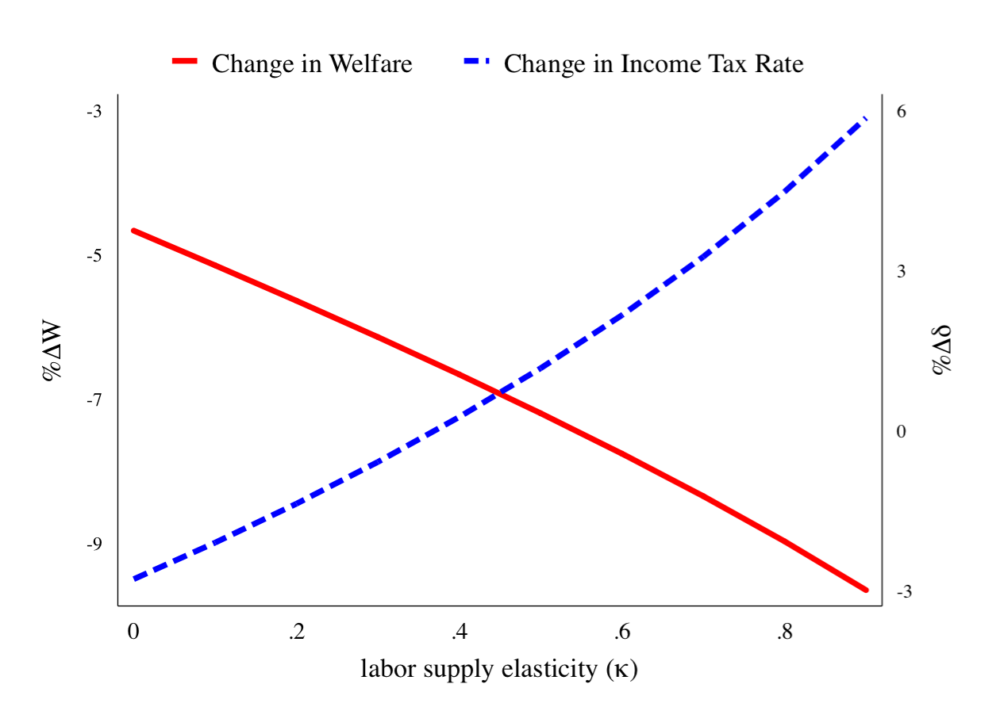
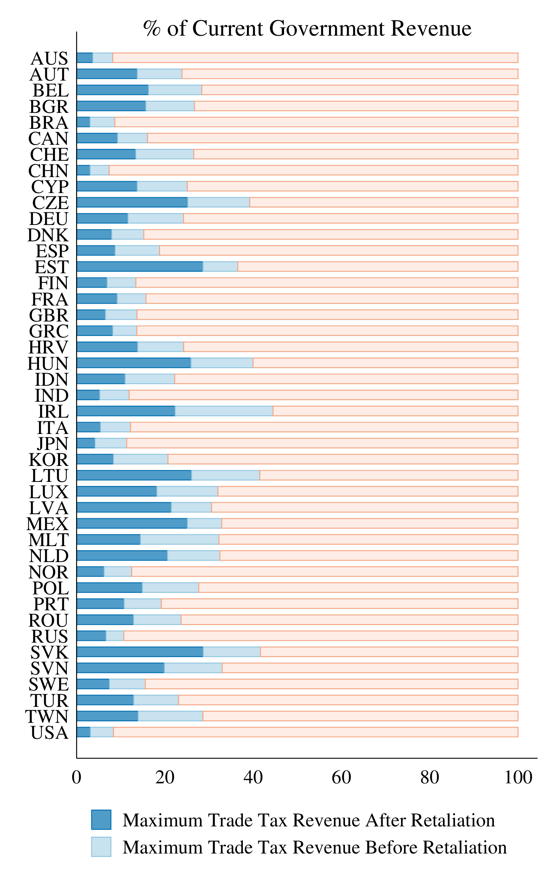
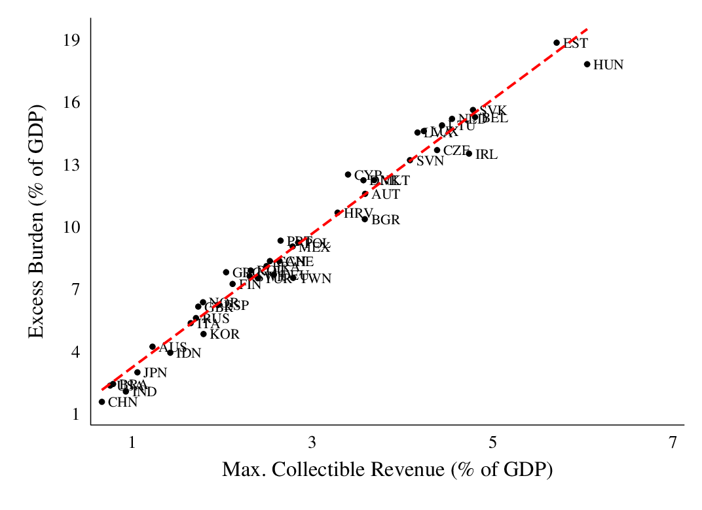

Can Trade Taxes be a Major Source of Government Revenue?
Ahmad Lashkaripour (Indiana University, CESifo, CEPR)
Journal of the European Economic Association · October 2021
Read PDF · Markdown source · Reader view · Published version · Slides
Abstract. The tariff-for-revenue argument has been invoked repeatedly in recent years to justify protectionism. It is motivated by the belief that a country with market power can use trade taxes to raise revenue from foreign consumers and producers. This paper develops a new sufficient statistics methodology to evaluate this claim for a wide range of countries. I show that (a) even large countries have limited market power. (b) So, before retaliation by trading partners, the average country can beneficially replace only 16% of its domestic tax revenues with trade taxes. (c) After retaliation, however, 50% of the collected trade tax revenues disappear, governments are forced to increase domestic taxes to counter their shrinking tax base, and real GDP drops across-the-board by an average of 7%. On the flip side, these findings indicate (d) the gains from multilateral trade agreements are also 30% larger once we account for the fiscal cost of trade wars.
1 Introduction
Recently, the president of the United States praised tariffs as a “great revenue producer.” This remark has resurfaced old debates that are reminiscent of “the Great Tariff Debate of 1888.”See, for example,https://beta.washingtonpost.com/politics/2019/07/16/tariff-revenue-trump-tweets-things-you-need-know/ At the core of these ongoing debates lie a set of unresolved questions:
- \((a)\)
Absent the threat of retaliation, can a country possibly gain from replacing domestic tax revenues with trade tax revenues?
- \((b)\)
If so, what fraction of government spending can be financed with only trade taxes?
- \((c)\)
Above all, how large are the potential losses from retaliation?
To answer questions \((a)\) and \((b)\) we need to compute the excess burden of trade taxation and determine what fraction of the burden is borne by foreign consumers and producers. The traditional literature on this issue simplifies this task by assuming that countries are small and possess no export or import market power.See Anderson (1996) for a review of the literature on trade tax reform in the presence of revenue considerations. Under this assumption, the burden of trade taxation falls entirely on the tax-imposing economy, and by Diamond and Mirrlees’s (1971) production efficiency principle, trade taxes become strictly less efficient than other revenue-raising tax instruments even for a non-cooperative country.
For all its merits, the traditional approach contradicts the recent assertion by Alvarez and Lucas (2007) that even small economies possess export/import market power after we account for national technology differentiation and general equilibrium linkages. In such cases, a non-cooperative country can gain unilaterally from replacing a fraction of its domestic taxes with equal-yield trade taxes. We have virtually no evidence, though, as to what fraction of the domestic tax revenue can be replaced with trade taxes in these circumstances.
Answering question \((c)\) is even more complicated, as it requires knowledge of Nash revenue-raising trade taxes that will prevail under multilateral retaliation. Calculating these taxes involves simultaneously solving for the optimal tax response of many countries while taking into account a wide range of general equilibrium interdependencies. Performing such a procedure can be infeasible with standard quantitative techniques unless we limit our analysis to a small sample of countries and industries.
To overcome these challenges, I derive sufficient statistics formulas for revenue-maximizing trade taxes in a multi-industry general equilibrium trade model that admits both product/technology differentiation, and an endogenous supply of labor. Mapping these formulas to data allows me to calculate the effectiveness of trade taxes at raising revenue before and after retaliation for a wide range of countries and across many industries.
My analysis finds that \((a)\) the degree of technology differentiation is low-enough that even large countries possess limited market power. \((b)\) So, even before retaliation by trading partners, the average country can beneficially replace only 16% of its domestic tax revenues with trade tax revenues. \((c)\) After retaliation, however, 50% of the collected trade tax revenues disappear. The domestic tax base also shrinks after retaliation, prompting governments to increase domestic taxes. More importantly, all parties lose from these developments and real GDP drops by more than 7% globally. On the flip side, these findings suggest that \((d)\) the gains from multilateral trade agreements are 30% larger once we account for the fiscal cost of trade wars.
Section 2 presents the baseline theoretical model, which is a multi-industry, multi-country Eaton and Kortum (2002) model with endogenous labor supply. All countries possess export and import market power, the degree of which depends on country size and the industry-level trade elasticities. All countries also have access to a complete set of revenue-raising tax instruments, including trade taxes as well as domestic income and VAT taxes. I also analyze several extensions to the baseline model to account for \((i)\) pre-existing domestic market distortions, \((ii)\) industry-specific factors of production, \((iii\)) within-country worker heterogeneity, and \((iv)\) input-output linkages.
Section 3 analyzes a tax reform, whereby a non-cooperative government replaces domestic taxes with equal-yield trade taxes in order to maximize the contribution of trade tax revenues to its budget. I consider two distinct cases, where trade tax revenues are maximized \((a)\) irrespective of their effect on aggregate welfare, and \((b)\) subject to not worsening aggregate welfare. I am particularly interested in Case \((b)\), which determines the maximum share of domestic tax revenues that can be beneficially replaced with trade taxes.
I analytically solve the government’s problem in both cases, deriving sufficient statistics formulas for revenue-maximizing export and import taxes. These formulas indicate that, regardless of the underlying model parameters, import taxes can beneficially replace a small fraction of the domestic tax revenue. To elaborate, import taxes are more effective at raising revenue when trade elasticities are low. But in that case, the import tax is also borne primarily by domestic consumers. This trade-off between effectiveness and efficiency means that even a non-cooperative government can beneficially replace a modest fraction of its domestic tax revenues with import taxes. Export taxes, however, do not face a similar trade-off and can be more-or-less effective depending on the underlying model parameters.
Section 3.2 analyzes the consequences of retaliation by trading partners. Retaliation, expectedly, leads to a reduction in trade tax revenues and inflicts a welfare loss on all parties. My analysis, however, highlights two welfare cost channels that have received little attention in the prior literature. First, in the trade war that ensues after retaliation, labor supply decisions become distorted due to an increase in consumer prices. Second, the domestic tax base shrinks, prompting governments to raise domestic taxes to maintain real public spending. The latter channel corresponds to the fiscal cost of a trade war.
My analysis of multilateral retaliation yields another basic insight: The consequences of retaliation are greater in circumstances where trade taxes are a more appealing fiscal instrument for non-cooperative governments. The intuition behind this result is that when trade elasticities are low, governments can capitalize on their higher national market power and raise a greater amount of trade tax revenues. But under these circumstances, countries are also more dependent on foreign trade, making them more vulnerable to retaliation.
Section 4 demonstrates how the sufficient statistics tax formulas, derived in Section 3, can be mapped to data. Doing so measures the effectiveness of trade taxes at raising revenue based on a simple procedure that requires knowledge of only \((i)\) industry-level trade elasticities, \((ii)\) the labor supply elasticity, and \((iii)\) observable trade shares. It also determines the welfare and fiscal consequences of multilateral retaliation by trading partners.
The procedure outlined in Section 4 plays a pivotal role in my quantitative analysis, especially in the case of multilateral retaliation. This new procedure determines the consequences of retaliation in one simple step, by solving a system of non-linear equations. In comparison, the traditional approach to analyzing multilateral retaliation involves an iterative procedure, where each iteration performs many constrained numerical optimizations. Unlike the new approach, the standard approach can become infeasible unless we restrict attention to a small set of countries and industries.
Section 5 estimates the industry-level trade elasticities using industry-level trade data from the World Input-Output Database (WIOD) and tariff data from UNCTAD-TRAINS. Together, these data-sets cover 43 major economies plus an aggregate of the rest of the world and span 56 traded and service-related industries. Using the estimated elasticities and the procedure outlined in Section 4, I produce four basic results:
- i.
- Before retaliation, trade taxes can beneficially replace only 16% of the domestic tax revenue for the average country. This outcome reflects the fact that industry-level trade elasticities are relatively low and even large countries possess limited market power.
- ii.
- After retaliation, trade tax revenues decline by 50%. The domestic tax base also shrinks by 3%, prompting governments to raise domestic taxes to maintain real public spending. Real aggregate income also drops in all countries by around 7% on average. Altogether, after retaliation, every $1 million of domestic tax revenue that is replaced with trade tax revenue imposes an excess burden of $2.5 million on the economy.The efficiency loss associated with trade taxes can reduce if we account for the lower monitoring and enforcement cost associated with these taxes (see Emran and Stiglitz (2005), Besley and Persson (2013), and Best et al. (2015)).
- iii.
- In countries where trade taxes are relatively more effective at raising revenue, they are also less efficient (i.e., they inflict a greater excess burden on the economy). This finding is related to the aforementioned trade-off between the effectiveness and efficiency of revenue-raising trade taxes. The trade-off is driven by the fact that when countries are net importers of low-trade elasticity goods, their import taxes are more effective at raising revenue. But such countries are also more reliant on trade and are more exposed to the negative consequences of retaliation.
- iv.
- The gains from trade agreements are 30% larger, once we account for \((a)\) the fiscal cost of trade wars, and \((b)\) distortions to labor supply decisions. The gains from multilateral trade agreements can be measured on the basis that they avert the losses from multilateral trade wars. I simply find that the cost of multilateral trade wars are larger than previously estimated, once we account for cost channels \((a)\) and \((b)\).
Related Literature
The debate regarding the potential size of trade tax revenues has advanced little since “the Great Tariff Debate of 1888.” This paper is, to my knowledge, the first to formally measure the effectiveness of trade taxes at replacing domestic tax revenues. Irwin (1998) who investigates whether the US economy was positioned to the right or left of the tariff Laffer curve circa 1888 is perhaps the most similar paper to mine in this regard.
Previously, Baunsgaard and Keen (2010) and Cagé and Gadenne (2018) have highlighted the fiscal cost of tariff liberalization using historical data. The present paper contributes to these studies by highlighting the fiscal cost of a multilateral trade war. I argue that trade wars inflict so much inefficiency on the global economy that they shrink the domestic tax base in most countries. Governments involved in a tariff war must, therefore, increase domestic taxes to maintain public spending.
This paper also contributes to an old and mature literature that studies the fiscal aspects of trade tax reforms (e.g., Keen and Ligthart (2002, 2005); Emran and Stiglitz (2005); Anderson and Neary (2016)).The above literature builds on earlier analyses of piecemeal tariff reforms, e.g., Hatta (1977) and Fukushima (1979), which abstracted from the fiscal cost channel This literature typically assumes that countries possess no export or import market power, which automatically rules out any unilateral gains from trade taxation—see Dixit (1985) for a comprehensive review.Dixit (1985) shows that, even when countries have market power, trade taxes should be combined with domestic taxes to reach the non-cooperative first-best outcome. If countries lack market power, though, the first-best can be reached with only zero trade taxes. This latter claim derives from the Diamond and Mirrlees (1971) production efficiency principle. The present paper, in comparison, estimates the degree of export and import market power for various countries. Guided by these estimates, I then present an alternative argument against taxing-trade-for-revenue, which emphasizes \((a)\) the ineffectiveness of trade taxes at raising revenue, and \((ii)\) the high cost of retaliation.
There is an even older argument against taxing trade for revenue or other purposes, which dates back to Baldwin (1982). It states that governments are prone to miscalculating the impacts of their policies. As a result, they adopt policy choices that are from optimal and even detrimental to own’s welfare. Analyses of the recent US-China trade war confirm this old argument (e.g., Amiti et al. (2019a); Fajgelbaum et al. (2019); Waugh (2019); Handley et al. (2020)).The aforementioned studies show that the recent tariffs on China worsened the terms-of-trade and aggregate welfare in the US economy, even without full retaliation by the Chinese government. One way to interpret these findings is that the US government applied tariffs that were far from their unilaterally optimal rate, to begin with.
On the theory side, my two-tier approach for characterizing the revenue-maximizing trade tax schedule shares commonalities with Costinot et al. (2015) and Costinot et al. (2020). The former split the optimal trade policy problem into an inner and outer problem. This procedure simplifies the characterization of unilaterally optimal trade taxes in a Ricardian model. The latter splits the optimal policy problem into a micro-problem and a macro-problem. This approach provides a transparent characterization of the unilaterally optimal trade taxes under firm-level heterogeneity and selection effects.
On a broader level, this paper contributes to a recent literature that quantifies the gains from regional and multilateral trade agreements (e.g., Ossa (2014, 2016); Caliendo and Parro (2015); Bagwell et al. (2018)). The existing literature often assumes that labor is inelastically supplied in each country. Under this assumption, the elimination of trade agreements has no fiscal cost or does not distort labor supply decisions. I argue that accounting for these previously-overlooked cost channels can magnify the gains from trade agreements.
2 Theoretical Model
Environment. The world economy consists of \(i=1,...,N\) countries, with \(\mathbb {C}\) denoting the set of countries. Labor is the sole factor of production. Country \(i\) is populated by \(L_{i}\) individuals, each endowed with one unit of labor. All individuals are perfectly mobile across the production of different goods but are immobile across countries; and are paid a country-specific wage, \(w_{i}\). There are \(k=1,...,K\) industries, with \(\mathbb {K}\) denoting the set of industries, each of which can differ in fundamentals such as the trade elasticity.
Preferences. There is a continuum of homogeneous goods indexed by \(\omega \in \Omega _{k}\equiv [0,1]\) in industry \(k\). The utility of the representative consumer in country \(i\) who consumes basket \(\boldsymbol {q}\) and supplies \(L\) units of labor are described by the following function
In the above formulation, \(v(L)=L^{1+\frac {1}{\kappa }}/\left (1+\frac {1}{\kappa }\right )\) accounts for disutility from labor, ensuring the elasticity of labor supply is constant. Preferences for final goods are given by the following Cobb-Douglas-CES utility aggregator
where \(\rho _{k}\in (0,1)\), while \(e_{i,k}\) denotes the constant share of expenditure on industry \(k\) (\(\sum _{k=1}^{K}e_{i,k}=1\)).
Production. Labor is the only factor of production and markets are perfectly competitive. The marginal cost of producing good \(\omega\) in country \(j\) and delivering to market \(i\) is given by
where productivity, \(z_{j,k}(\omega )\), is independently drawn from a Fréchet distribution, \(F_{j,k}(z)=\exp (-T_{j,k}z^{-\theta _{k}})\). \(\tau _{ji,k}\geq 1\) denotes the iceberg trade cost associated with exporting from country \(j\) to market \(i\), with \(\tau _{ii,k}=1\) for all \(i\in \mathbb {C}\).I also assume that \(\tau _{ji,k}\geq \tau _{j\ell,k}\tau _{\ell i,k}\) for all \(j\), \(i\), and \(\ell \in \mathbb {C}\). Considering the above cost function, country \(j\) can supply good \(\omega\) to market \(i\) at a perfectly competitive price, \(p_{ji,k}(\omega )=c_{ji,k}(\omega )\).
Trade and Income Taxes. Country \(i\) has access to a full set of \((a)\) industry-level import taxes, \(\{t_{ji,k}\},\) that are applied to all goods imported from origin \(j\neq i\); as well as \((b)\) industry-level export taxes, \(\{x_{ij,k}\}\), that are applied to goods exported to destination \(j\neq i\). By construction, \(x_{ii,k}=t_{ii,k}\equiv 0\) for all \(k\). Trade taxes create a wedge between the producer price, \(p_{ji,k}(\omega )\), and the consumer price, \(\tilde {p}_{ji,k}(\omega )\) of every traded variety. In particular,
Given the constancy of the unit labor cost, the direct passthrough of taxes on to consumer prices (i.e., the passthrough net of general equilibrium wage effects) is complete. This feature is consistent with recent findings in Amiti et al. (2019b) and Fajgelbaum et al. (2019). In Appendix G, however, I relax the constant-unit-labor-cost assumption and discuss how this amendment affects the main results of the paper.
Each country \(i\) also has access to a linear income tax, \(\delta _{i}\), which raises a revenue \(\delta _{i}w_{i}L_{i}\). Both trade and income taxes have distortionary effects on the economy. The trade taxes directly distort consumer prices, whereas the income tax decreases the labor supply.To be specific, \(L_{i}=\left ([1-\delta _{i}]w_{i}/\tilde {P}_{i}\right )^{\kappa }\) where \(\tilde {P}_{i}\) is the price index associated with \(Q_{i}\). Importantly, as is well-known from the public finance literature, a linear income tax is equivalent to a uniform consumption (or VAT) tax. So, we can henceforth view \(\delta\) as an instrument that accounts for the collective sum of flat income and consumption taxes.
General Equilibrium. Consumers in Market \(i\) purchase variety \(\omega\) from the cheapest supplier. So, the actual price paid for good \(\omega\) satisfies
Following the steps in Eaton and Kortum (2002), the share of country \(i\)’s expenditure on goods originating from country \(j\) is given by
where \(\boldsymbol {w}\equiv \{w_{i}\}\). Market \(i\)’s total expenditure on country \(j\) goods is, therefore, given by \(X_{ji,k}(\boldsymbol {w})=\lambda _{ji,k}(\boldsymbol {w})e_{i,k}Y_{i}\), with \(Y_{i}\) denoting total expenditure in Country \(i\). The national-level budget constraint (BC) requires that total expenditure in country \(i\) is the sum of personal expenditure from net wage income, \((1-\delta _{i})w_{i}L_{i}\) and government expenditure form tax revenues, \(G_{i}\equiv \delta _{i}w_{i}L_{i}+\mathcal {R}_{i}\):
In the above expression, \(\boldsymbol {Y}\equiv \{Y_{i}\}\); while \(L_{i}(.)=([1-\delta _{i}]w_{i}/\tilde {P}_{i})^{\kappa }\) where \(\tilde {P}_{i}\) is the price index of the aggregate consumption basket.To be specific, the consumer price index is given by \(\tilde {P}_{i}=\tilde {e}_{i}\prod _{k}\tilde {P}_{i,k}^{e_{i,k}}\), where \(\tilde {e}_{i}=\prod _{k}e_{i,k}^{-e_{i,k}}\) and \(\tilde {P}_{i,k}=\Gamma \left (\frac {\theta _{k}-1/\rho _{k}}{\theta _{k}}\right )^{-\rho _{k}}\left [\sum _{j=1}^{N}T_{j,k}\left [(1+t_{ji,k})(1+x_{ji,k})\tau _{ji,k}w_{j}\right ]^{-\theta _{k}}\right ]^{-1/\theta _{k}}\), with \(\Gamma (.)\) denoting the Gamma function.\(\mathcal {R}_{i}(.)\) denotes the portion of government spending that is financed by trade tax revenues, and is equal to
Equation 1 along with the representative consumer’s budget constraint, ensure that trade is balanced between countries. For any vector of taxes, \(\boldsymbol {x}\equiv \{x_{ji,k}\}\), \(\boldsymbol {t}\equiv \{t_{ji,k}\}\), and \(\boldsymbol {\delta }\equiv \{\delta _{i}\}\), equilibrium wages, \(\boldsymbol {w}\), and expenditure levels, \(\boldsymbol {Y}\), should satisfy Equation 1 and the labor market clearing condition:
Considering this, all equilibrium outcomes can be uniquely determined given the policy\(\times\) wage\(\times\) income combination \((\boldsymbol {t},\boldsymbol {x},\boldsymbol {\delta };\boldsymbol {w},\boldsymbol {Y})\). The following definition outlines this point.
Definition.The policy\(\times\) wage\(\times\) income combination \((\boldsymbol {t},\boldsymbol {x},\boldsymbol {\delta };\boldsymbol {w},\boldsymbol {Y})\) is feasible if given taxes \((\boldsymbol {t},\boldsymbol {x},\boldsymbol {\delta })\), equilibrium vectors \(\boldsymbol {w}\) and \(\boldsymbol {Y}\) satisfy Equations 1 and 3. Relatedly, \(\mathbb {F}\) denotes the set of all feasible policy\(\times\) wage\(\times\) income combinations.
To be clear, in the above definition, \(\boldsymbol {w}\) and \(\boldsymbol {Y}\) are implicit functions of the tax schedule \((\boldsymbol {t},\boldsymbol {x},\boldsymbol {\delta })\). So, the effect of a tax change on different equilibrium outcomes can always be decomposed into a direct effect and a general equilibrium effect that operates through a change in \(\boldsymbol {w}\) and \(\boldsymbol {Y}\).
3 Effectiveness of Trade Taxes at Raising Revenue
As discussed earlier, a country that possesses market power can beneficially replace a portion of their income tax revenue with trade tax revenues. The adoption of trade taxes, though, worsens the welfare of one’s trading partners as they bear part of the trade tax burden. Moreover, if trading partners retaliate, all possible gains from unilateral trade taxation disappear. Considering these points, I first analyze the effectiveness of revenue-raising trade taxes before retaliation. I subsequently analyze the consequences of multilateral retaliation.
3.1 Effectiveness Before Retaliation
Suppose a government is neither cooperative nor is it concerned by retaliation. Such a government may be tempted to use trade taxes for revenue-generation, but faces two basic questions:
- i.
- What share of the government’s budget can be financed with trade taxes if social welfare was not a binding consideration?
- ii.
- What share of the government’s budget can be financed with trade taxes without worsening domestic social welfare?
Question 1 is relevant to governments that have a strict political or institutional preference for trade taxation (i.e., Case 1). The government’s objective, in this case, is to maximize the contribution of trade tax revenues to its budget irrespective of how social welfare is affected—see Bhagwati (1988). This scenario is especially relevant to the current political climate wherein multiple governments have turned to trade tax revenues to fund political redistribution in their country, even though these policies have compromised social welfare.One prominent example concerns the Trump administration’s farm subsidies, which were financed with import tariff hikes. See Fajgelbaum et al. (2019) for the consequences of these tariff hikes on social welfare in the US economy.
Question 2, on the other hand, is relevant to governments who attach a prominent weight to social welfare in their objective function (i.e., Case 2). Such a government is willing to replace income taxes with equal-yield trade taxes insofar as domestic social welfare does not deteriorate in the process. There is ample evidence that some governments exhibit this type of attitude towards trade policy. Goldberg and Maggi’s (1999) analysis of the U.S.’s trade policy indicates that the U.S. government attached a prominent weight to social welfare (over political economy motives) circa 1983. Below, I analyze Cases 1 and 2 separately, elaborating more on their implicit differences throughout.
Case 1: Strict Political Preference for Trade Taxation.
To answer questions \((i)\), I need to determine the revenue-maximizing trade tax schedule in each country \(i\). That is the trade tax schedule that maximizes the contribution of trade tax revenues to government \(i\)’s expenditure, given applied taxes in the rest of the world. These taxes solve the following problem:
where \(\boldsymbol {t}_{-i}\equiv \{t_{j\iota,k}\}_{\iota \neq i}\) and \(\boldsymbol {x}_{-i}\equiv \{x_{\iota j,k}\}_{\iota \neq i}\) denote the vector of applied taxes in the rest of the world. \(\overline {G}_{i}\) denotes total government spending under the status quo. The revenue-neutrality constraint in (P1), therefore, ensures that total government spending or total tax revenue is preserved under the new tax schedule. Note that we can replace this constraint with one that asserts the perseverance of real government spending, \(\overline {G}_{i}/\tilde {P}_{i}\). With this choice of constraint, however, the optimal tax formulas will remain the same up-to a uniform tax shifter—I formally solve this alternative problem in Appendix D and highlight its subtle differences throughout this section.
Problem (P1) is plagued with various general equilibrium interdependencies. However, as discussed below, we can still analytically solve (P1) and derive sufficient statistics formulas for \(\boldsymbol {t}_{i}^{*}(.)\) and \(\boldsymbol {x}_{i}^{*}(.)\). An important step in this process is to invoke the multiplicity of revenue-maximizing taxes and break Problem (P1) into two sub-problems. The presence of multiplicity is outlined by the following lemma.
Lemma 1.For any \(a\in \mathbb {R}_{+}\) \((i)\) if \(\text{A}\equiv (\boldsymbol {1}+\boldsymbol {t}_{i},\boldsymbol {t}_{-i}\),\(\boldsymbol {1}+\boldsymbol {x}_{i},\boldsymbol {x}_{-i},\boldsymbol {\delta };w_{i},\boldsymbol {w}_{-i})\in \mathbb {F}\), then \(\text{A}'\equiv (a(\boldsymbol {1}+\boldsymbol {t}_{i}),\boldsymbol {t}_{-i},(\boldsymbol {1}+\boldsymbol {x}_{i})/a,\boldsymbol {x}_{-i},\boldsymbol {\delta };aw_{i},\boldsymbol {w}_{-i})\in \mathbb {F}\); moreover, \((ii)\) the share of trade tax revenue-to-income tax revenue is preserved under allocations \(\text{A}\) and \(\text{A}'\) : \(\mathcal {R}_{i}(\text{A})/\delta _{i}w_{i}L_{i}=\mathcal {R}_{i}(\text{A}')/\delta _{i}{w'}_{i}{L'}_{i}\).To economize on the notation, Lemma 1 is cast in terms of feasible tax-wages combinations, \(\text{A}\equiv (\boldsymbol {1}+\boldsymbol {t},\boldsymbol {1}+\boldsymbol {x},\boldsymbol {\delta };\boldsymbol {w})\). The lemma can be equivalently expressed in terms of feasible tax-wage-income combinations, \(\tilde {A}\equiv (\boldsymbol {1}+\boldsymbol {t},\boldsymbol {1}+\boldsymbol {x},\boldsymbol {\delta };\boldsymbol {w},\boldsymbol {Y})\).
The above lemma, which is proven in Appendix A, is akin to the celebrated Lerner symmetry. It states that an across-the-board shift in country \(i\)’s import taxes, export taxes, and wage rate will multiply the total revenue in nominal terms, but will preserve the share of trade tax revenue in total tax revenue. The Lerner symmetry states that such a transformation will also preserve welfare.
Considering Lemma 1, we can split Problem (P1) into two sub-problems.Splitting the optimal tax problem into an upper- and lower-tier problem is reminiscent of the two-tier approach adopted by Costinot et al. (2015) and Costinot et al. (2020). The former splits the optimal trade policy problem into an inner problem that takes the relative wage as given and an outer problem that determines the optimal relative wage. The latter splits the optimal policy problem into a micro-problem that determines the firm-level wedges that deliver aggregate quantities at the lowest cost and a macro-problem that determines the optimal aggregate quantities.First, a lower-tier problem that maximizes \(\mathcal {R}_{i}(.)\) subject to total government revenue adding up to an arbitrary value \(G\). This step determines the optimal tax rates up-to a constant tax shifter. Second, an upper-tier problem chooses the constant tax shifter in order to satisfy the revenue-preserving constraint \(G=\overline {G}_{i}\). Even after splitting Problem P1 as noted, deriving an analytical solution is complicated by general equilibrium interrelations. But as shown in Appendix B, this task can be accomplished by appealing to Lemma 1, envelope conditions, and some basic results from consumer theory.
Proposition 1.The trade tax rates that maximize country \(i\)’s revenue from trade taxes (for a fixed level of government spending \(G\)) are given by the following formulas
where \(\bar {t}_{i}\in \mathbb {R}_{+}\) is a tax shifter that regulates the nominal tax revenue and is chosen to satisfy the revenue-preserving constraint.The superscript “\(*\) ” indicates that the expenditure shares are evaluated in the equilibrium that occurs under the revenue-maximizing tax rates.
Following Lemma 1, the country-specific tax shifter, \(\bar {t}_{i}\), is pinned down by the revenue-preserving constraint in Problem (\(\text{P1}\)), i.e., the upper-tier problem. More specifically, if the government in country \(i\) raises trade taxes according to the formulas specified by Proposition 1, then there is a unique \(\bar {t}_{i}\) that ensures total tax revenue remains equal to \(\bar {G}_{i}\). To deal with the multiplicity of tax solutions, Theorem 1 implicitly assumes that \(\delta _{i}\) is normalized to its pre-reform value. As shown in Appendix D, under the alternative specification where (P1) is solved subject to real revenue-neutrality, \(\bar {t}_{i}\) can be normalized to zero without loss of generality but \(\delta _{i}\) should be chosen to satisfy the real revenue-neutrality constraint.
The key advantage of Proposition 1 is that it characterizes the revenue-maximizing trade tax schedule as a function of two sufficient statics: \((a)\) industry-level trade elasticities, and \((b)\) observable expenditure shares. As we will see in Section 4, this feature allows us to solve the entire vector of revenue-maximizing trade taxes (before and after retaliation) in one simple step as a function of estimable elasticities and observables.
We can appeal to the Laffer curve to gain more intuition about the tax formulas presented under Proposition 1. When solving Problem (P1), the tax authority in country \(i\) faces a basic trade-off: On one hand, increasing the trade tax rate has a positive arithmetic effect on tax revenues. On the other hand, increasing trade taxes has a negative economic effect on tax revenues, as it limits foreign trade and shrinks the trade tax base. In light of this trade-off, trade tax revenues are maximized at the peak of the Laffer curve where the export and import tax rates are proportional to the inverse the demand elasticity facing national-level exports and imports.
As such, the revenue-maximizing trade taxes characterized by Proposition 1 are distinct from optimal -welfare-maximizing- trade taxes unless the trade elasticities are uniform across industries.See Costinot et al. (2015) and Beshkar and Lashkaripour (2020) for a characterization of optimal trade taxes in general equilibrium, multi-industry settings.If trade elasticities exhibit great heterogeneity across industries, the tax rates specified by Theorem 1 can actually worsen real income in the tax-imposing. With this background, I next characterize the tax rates that maximize the trade tax revenue without worsening real income in the tax-imposing country.
Case 2: No Political Preference for Trade Taxation.
Now consider a government that is non-cooperative but has no strict political or institutional preference for trade taxation either. Such a government is willing to finance government spending with trade taxes, but to the extent that social welfare is not deteriorated. As noted earlier, evidence from existing policy practices suggest that some governments do indeed attach a prominent weight to social welfare (Goldberg and Maggi (1999)). To determine the effectiveness of trade taxes for such a government, we need to solve the following problem that includes an additional constraint imposing welfare-neutrality:
The above problem differs from Problem (P1) in a key aspect: Given the additional constraint, \(\Delta W_{i}(.)\ge 0\), Problem (P2) determines the extent to which a government can beneficially replace domestic income taxes with trade taxes. To elucidate this distinction, recall that the welfare-maximizing and revenue-maximizing trade tax schedules do not necessarily coincide. Specifically, to maximize trade tax revenues, the government has to distort domestic prices in a way that can be detrimental to domestic social welfare. The welfare-neutrality constraint added to Problem (P2) accounts for the tendency of certain governments to avoid such a situation.
If trade elasticities are sufficiently low and homogeneous, then the revenue-maximizing trade tax schedule is welfare improving by design. That is,
where \(\boldsymbol {t}_{i}^{*}\) and \(\boldsymbol {x}_{i}^{*}\) are the revenue-maximizing tax rates specified by Proposition 1. In that case, Problems (P1) and (P2) are identical. However, if trade elasticities are too high and governments possess limited market power, the revenue-maximizing trade taxes specified by Proposition 1 can worsen welfare, i.e., \(\Delta W_{i}(\boldsymbol {t}_{i}^{*},\boldsymbol {x}_{i}^{*};...)<0\). In that case, it is impossible to derive exact analytic formulas for trade taxes that solve P2. However, we can analytically solve P2 to a first-order approximation by appealing to the following lemma.
Lemma 2.\(\Delta W_{i}({\boldsymbol {t}'}_{i},{\boldsymbol {x}'}_{i};\boldsymbol {t}_{-i},\boldsymbol {x}_{-i},\boldsymbol {\delta };\boldsymbol {w},\boldsymbol {Y})>0\) if \({\boldsymbol {t}'}_{i}=\boldsymbol {0}\) and \({\boldsymbol {x}'}_{i}=\left \{ 1/\theta _{k}(1-\lambda _{ij,k})\right \} _{j,k}\).
The above lemma states that any country \(i\) can improve its welfare by imposing zero tariffs and the revenue-maximizing export tax schedule. The above lemma strictly generalizes the assertion in Alvarez and Lucas (2007) to an economy that accommodates many asymmetric industries. It states that, in the presence of technology differentiation, even a small country can gain unilaterally from trade taxation. These unilateral gains, though, worsen global efficiency and impose a burden on other countries.
Let \(\boldsymbol {t}_{i}^{*}\) and \(\boldsymbol {x}_{i}^{*}\) denote the solution to (P2). Lemma 2 establishes that \(1+x_{ij,k}^{*}=\left [1+1/\theta _{k}(1-\lambda _{ij,k})\right ](1+\bar {t}_{i})^{-1}\), where \(\bar {t}_{i}\) is chosen to satisfy the revenue-neutrality constraint. Moreover, since \(W_{i}(.)\) is a concave function of tariffs, it trivially follows that \((1+\bar {t}_{i})(1+1/\theta _{k}\lambda _{ii,k})\geq 1+t_{ji,k}^{*}\geq 1+\bar {t}_{i}\). Hence, given that both \(\mathcal {R}_{i}(.)\) and \(W_{i}(.)\) are concave in \(\boldsymbol {t}_{i}\), we can approximate the solution to (P2) based on the solution to (P1), as noted by the following proposition.
Proposition 2.The trade tax rates that maximize country \(i\)’s trade tax revenues without deteriorating domestic welfare are given by
where \(\bar {t}_{i}\in \mathbb {R}_{+}\) is a tax shifter that regulates the nominal tax revenue and is chosen to satisfy the revenue-neutrality constraint and \(\bar {\alpha }_{i}\in (0,1)\) is a uniform tax shifter that is chosen to satisfy the welfare-neutral constraint, \(\Delta W_{i}(.)=0\).
The gain more intuition about the above proposition, note two extreme cases. If \(\bar {\alpha }_{i}=0\), the above import tax rate maximizes trade tax revenue while possibly worsening welfare. alternatively, if \(\bar {\alpha }_{i}=1\), the above import tax rate is strictly welfare improving based on Lemma 2. So, by increasing \(\alpha _{i}\) from an initial value of zero, we can eventually detect an import tax rate close to the revenue-maximizing rate that satisfies the welfare-neutrality constraint.
The difference between the tax schedules implied by Problems (P1) and (P2) is regulated by \((i)\) the level of, and \((ii)\) the cross-industry heterogeneity in trade elasticities. If trade elasticities are low, then countries possess significant export market power. In that case, the large gains from export taxation assure that the solutions to (P1) and (P2) coincide. Likewise, if trade elasticities are rather uniform across industries, revenue-raising import taxes are less detrimental to domestic welfare. In that case, the welfare-neutrality constraint is less likely to be binding and the solutions to (P1) and (P2) will once again coincide.
On the contrary, if industry-level trade elasticities are low and high-heterogeneous, then the tax schedule that solves (P2) yields a strictly smaller revenue. On one hand, when trade elasticities are heterogeneous, the revenue-maximizing import taxes are borne primarily by domestic consumers. On the other hand, as \(\theta _{k}\rightarrow \infty\), export taxes are also borne primarily by domestic firms. The following remark summarizes these arguments.
If industry-level trade elasticities are high, “export” taxes are an ineffective non-cooperative fiscal instrument, because they are borne primarily by the tax-imposing economy. Similarly, if trade elasticities are highly heterogeneous across industries, “import” taxes are an ineffective fiscal instrument. Because increasing the amount of import tax revenue, in that case, coincides with increasing the incidence of taxation on domestic consumers.
In light of the above remark, a credible assessment of revenue-raising trade taxes requires credible estimates for trade elasticities. A formal estimation of the trade elasticities is performed later in Section 5. Before that, however, I discuss the consequences of retaliation and also how to map the sufficient statistics tax formulas to data.
3.2 Effectiveness Under Retaliation
If historical records are any indication, a country that turns to trade taxation will face retaliation from the rest of the world. I henceforth mode retaliation as a scenario where non-cooperative countries simultaneously erect revenue-maximizing trade taxes.Alternatively, we can assume that countries erect welfare-maximizing trade taxes. Under that assumption, the best export tax response will remain identical. However, the best import tax response will consist of less-heterogeneous import taxes. See Lashkaripour (2019) for an analysis of multilateral retaliation under welfare-maximizing import taxes.To determine the best tax response for each country in this scenario, we need to solve (P1) simultaneously for all \(N\) countries. To elaborate, let \(\boldsymbol {t}_{i}^{*}(\boldsymbol {t}_{-i},\boldsymbol {x})\) and \(\boldsymbol {x}_{i}^{*}(\boldsymbol {t},\boldsymbol {x}_{-i})\) denote the solutions to (P1) for country \(i\). The full vector of revenue-maximizing taxes is the solution to the following system:
Before moving forward, I should emphasize that the above problem is plagued with the curse of dimensionality when confronted with standard optimization techniques. To make this point clear, let me outline the standard technique used by Ossa (2014) and others to approach these kinds of problems. The researcher starts with an initial guess for revenue-maximizing taxes, namely, \(\boldsymbol {t}_{0}^{*}\) and \(\boldsymbol {x}_{0}^{*}\). Then, they update \(\boldsymbol {t}_{i}^{*}\) and \(\boldsymbol {x}_{i}^{*}\), given \(\boldsymbol {t}_{0}^{*}\) and \(\boldsymbol {x}_{0}^{*}\), for each country \(i\). This second step requires solving \(N\) constrained global optimizations, each involving \(2\left (N-1\right )K\) tax rates and \(2N\) equilibrium outcomes (namely, \(\boldsymbol {w}\) and \(\boldsymbol {Y}\)). After updating the initial guess, the same procedure is repeated iteratively until convergence is achieved.Perroni and Whalley (2000) and Ossa (2014) apply this iterative method to compute Nash tariffs in the event of a tariff war. As noted by Ossa (2016), the efficiency of the standard iterative optimization technique can be enhanced by \((i)\) parallelizing the country-specific optimizations, and \((ii)\) providing analytic derivatives for the objective function.With many countries and industries, this approach can become infeasible to implement.
To overcome the curse of dimensionality, I can appeal to the sufficient statistics formulas specified by Theorem 1. This is possible because Theorem 1 characterizes the best tax response of any country \(i\), given applied taxes by other countries. Simultaneously solving the system of best tax response functions, yields the tax rates that will prevail under retaliation.
Proposition 3.In the event of retaliation by trading partners, the Nash revenue-maximizing trade taxes can be solved as a solution to the following system
where \(\boldsymbol {t}^{*}\) and \(\boldsymbol {x}^{*}\) denote the vector of Nash trade taxes all over the world, while \(\bar {t}_{i}\) is a country-specific tax shifter that is pinned down by the revenue-neutrality constraint.
It is needless to say that after retaliation, all the possible benefits from unilateral trade taxation disappear. All countries lose due to trade reduction and trade tax revenues decline due to a shrinking of the trade tax base. The extent to which countries lose is a function of the industry-level trade elasticities: On one hand, when trade elasticities are low, retaliatory tariffs are higher. On the other hand, when trade elasticities are low, trade reduction is also more detrimental to welfare. The following remark summarizes these arguments.
When industry-level trade elasticities are low, \((a)\) trade taxes are a more effective (non-cooperative) revenue-raising instrument; but \((b)\) the potential losses from retaliation are also larger.
The system specified by Proposition 3 solves for Nash trade taxes that maximize revenue. Following my earlier discussion, this scenario is more appropriate if governments have a political or institutional preference for trade taxation. Alternatively, retaliation can occur in the form of governments adopting welfare-maximizing Nash taxes. In that case, we can adopt a fairly similar approach to compute the Nash tariffs—see Lashkaripour (2019) for a thorough discussion on the determination of welfare-maximizing Nash tariffs. Remark 2, however, can be stated as is under either scenario.When Nash trade taxes are chosen to maximize welfare, export taxes are given by the same formula. That is, they strictly increase with the industry-level trade elasticity. So, with lower trade elasticities, a trade war both shrinks global trade more intensively and inflicts a greater welfare loss on involved countries.
Importantly, the consequences of retaliation depend on whether government revenues are maintained in real or nominal terms. In the former case, retaliation has an additional fiscal cost, which operates by shrinking the income tax base. That is, when the income tax base shrinks, governments are obliged to raise \(\delta _{i}\) to maintain real government expenditure. Doing so imposes an additional cost on the economy by distorting labor supply decisions—see Appendix D for a formal analysis. In comparison, to maintain nominal expenditure, the government can simply adjust the uniform tax shifter \(\bar {t}_{i}\), which is welfare neutral per Lemma 1.
4 Mapping Sufficient Statistics Formulas to Data
In this section, I demonstrate how the sufficient statistics formulas derived in Section 3 can be mapped to data. Doing so \((a)\) quantifies the extent to which trade taxes can replace existing income tax revenues, and \((b)\) determines the welfare consequences of trade tax adoption before and after retaliation. As argued earlier, performing tasks \((a)\) and \((b)\) can be infeasible with standard quantitative techniques, especially in the case of retaliation.
In the interest of space, I focus my discussion around the more complex case where countries retaliate against each other. I subsequently outline how similar results apply to the simpler, pre-retaliation case. To present my argument, I adopt the conventional exact hat-algebra notation, where \(\hat {z}\equiv z^{*}/z\) denotes the change in a generic variable \(z\) when moving from the factual equilibrium to the counterfactual Nash equilibrium. The basic idea here is to invoke the hat-algebra notation and express the revenue-maximizing tax formulas specified by Proposition 3 in changes. Specifically, noting that \(\lambda _{ii,k}^{*}=\lambda _{ii,k}\hat {\lambda }_{ii,k}\) and \(\lambda _{ij,k}^{*}=\lambda _{ij,k}\hat {\lambda }_{ij,k}\), the revenue-maximizing Nash import and export taxes can be formulated in changes as follows:
Using the same logic, we can express the equilibrium conditions specified by Equations 1 and 3 in changes. We can then simultaneously solve the revenue-maximizing tax formulas alongside the equilibrium conditions to compute the change in key economic variables when moving from the status quo to the Nash equilibrium. The following Proposition formally outlines this procedure.
Proposition 4.The Nash revenue-maximizing trade taxes, \(\{t_{ji,k}^{*}\}\) and \(\{x_{ij,k}^{*}\}\), as well as their effect on wages, \(\{\hat {w}_{i}\}\), total income, \(\{\hat {Y}_{i}\}\), and labor supply, \(\{\hat {L}_{i}\}\), can be solved as a solution to the following system of equations:
The system specified by Proposition 4 involves \(3N+NK+N(N-1)K\) independent equations and unknowns—namely, \(NK\) import tax rates, \(\{t_{i,k}^{*}\}\); \(N(N-1)K\) export tax rates, \(\{x_{ij,k}^{*}\}\); \(N\) wage changes, \(\{\hat {w}_{i}\}\); \(N\) labor supply changes, \(\{\hat {L}_{i}\}\); and \(N\) income changes, \(\{\hat {Y}_{i}\}\). Solving this system requires knowledge of only \((i)\) observables (\(t_{ji,k}\), \(x_{ji,k}\), \(\delta _{i}\), \(\lambda _{ji,k}\), \(e_{i,k}\), \(w_{i}L_{i}\), \(Y_{i}\)), and \((ii)\) estimable elasticities (\(\theta _{k}\) and \(\kappa\)).Note that, following Equation 3, \(w_{i}L_{i}\) is implicitly implied by data on \(t_{ji,k}\), \(x_{ji,k}\), \(\lambda _{ji,k}\), \(e_{i,k}\), and \(Y_{i}\).Proposition 4, therefore eliminates the need to estimate the policy-invariant parameters, \(T_{i,k}\), and \(\tau _{ji,k}\). It also rids us of the need to perform an iterative global optimization procedure. These two simplifications are significant from a quantitative perspective. Without the aid of Proposition 4, solving for \(\boldsymbol {t}^{*}\) and \(\boldsymbol {x}^{*}\) would be effectively infeasible unless we impose strong limits on the number of countries and industries.
When interpreting Proposition 4 one should take note of a key subtlety. In the counterfactual exercise specified by Proposition 4, the nominal income tax rate, \(\delta _{i}\), is constant, but the effective income tax rate is declining. To elaborate, moving from \(\text{A}\equiv (\bar {\boldsymbol {t}},\boldsymbol {\bar {x}},\boldsymbol {\delta };\boldsymbol {w},\boldsymbol {Y})\) to \(\text{A}^{\prime}\equiv (\boldsymbol {t}^{*},\boldsymbol {x}^{*},\boldsymbol {\delta };\boldsymbol {w}',\boldsymbol {Y}')\), a smaller fraction of the consumer’s real wage income is being withdrawn by the income tax. Simply, because a bigger share of the government’s real spending is being financed by trade taxes. In other words, following Lemma 1, Proposition 4 can be reformulated such that \(\bar {t}_{i}\) is normalized to zero and \(\hat {\delta }_{i}=\delta _{i}'/\delta _{i}\) is instead treated as a free-moving variable. Relatedly, Appendix D presents a variant of Proposition 4 where \(\hat {\delta }_{i}\) is chosen to satisfy real revenue-neutrality, which as argued earlier, has its distinct implications.
Solving the system specified by Proposition 4 serves two main purposes. First, it determines how the effectiveness of trade taxes at raising revenue is affected by retaliation. Second, the system also determines how trade taxation for revenue purposes ultimately affects welfare, \(W_{i}=U_{i}(.)\). The welfare effects can be calculated using the change in real tax revenue and the real wage, both of which are implied by Proposition 4.
Proposition 5.The welfare consequences of substituting income tax revenue with trade tax revenue are given by
The proof of the above proposition follows trivially from the fact that the optimal labor supply in country \(i\) is given by \(L_{i}=\left ([1-\delta _{i}]w_{i}/\tilde {P}_{i}\right )^{\kappa }\). To put a dollar value on welfare consequences, we can further compute the excess burden of the tax policy change using the output of Proposition 4. This step is formally outlined in Appendix C.
Finally, we can produce an analog of Proposition 4 to determine the effectiveness of trade taxes for country \(i\) before retaliation. In that case, we need to solve the same system while setting \(x_{nj,k}^{*}=x_{nj,k}\) and \(t_{jn,k}^{*}=t_{jn,k}\) for all \(n\neq i\). To determine what fraction of the government’s expenditure can be beneficially financed with trade taxes, we also need to replace the optimal import tax formula with that specified by Proposition 2. The tax shifter, \(\bar {\alpha }_{i}\), is then pinned down by introducing an additional equation that imposes welfare neutrality, i.e., \(\hat {W}_{i}=1\).
4.1 Basic Extensions
Before moving forward, let me discuss how the results presented earlier extend to richer environments that admit \((i)\) pre-existing market distortions, \((ii)\) a variable unit labor cost, and \((iii)\) within-country income heterogeneity. In the interest of space, I resort to a verbal discussion of these extensions in the main text. In the appendix, however, I formally derive analogs for Proposition 4 in these richer environments.
Accounting for Pre-Existing Market Distortions.
My baseline analysis relied on a perfectly competitive model in which the market equilibrium is efficient. This setup overlooks a possibly relevant consideration: that using trade taxes to raise revenue may exacerbate pre-existing market distortions. In Appendix F, I introduce markup distortions into my baseline model. In this alternative setup, I re-derive sufficient statistics formulas for revenue-maximizing trade taxes and present an analog for Proposition 4. Doing so indicates that the fraction of income tax revenue that is replaceable with trade tax revenue remains approximately the same. However, the deadweight burden associated with revenue-raising trade taxes is higher if the industry-level markup is negatively correlated with the industry-level trade elasticity.
As in the baseline model, we can map sufficient statistics tax formulas to data to quantify the fiscal properties of trade taxes under markup distortions. As before, the basic idea is to jointly solve for the revenue-maximizing tax rates and equilibrium conditions in changes. As detailed in Appendix F, the formulas governing the revenue-maximizing tax rates are similar to those specified under Proposition 4. But the labor market clearing condition and the budget constraint need to be revised to account for profits. Specifically, letting \(\mu _{k}\geq 1\) denote the constant markup associated with industry \(k\), the labor market clearing condition (LMC) and national-level budget constraint (BC) can be formulated in changes as
The last term in country \(i\)’s budget constraint corresponds to total profits collected by firms in that country. This term was zero in the baseline model, where \(\mu _{k}=1\) for all \(k\) by assumption. A basic complication here is that evaluating the above equations requires information on industry-level markups, which are difficult to recover from macro-level trade data.
Accounting for a Variable Unit Labor Cost.
The baseline EK model assumes a constant unit labor cost. This assumption implies that the direct passthrough of trade taxes onto consumer prices is complete once we net out general equilibrium wage effects. As noted earlier, this assumption is consistent with the findings in Amiti et al. (2019b) and Fajgelbaum et al. (2019). In Appendix G, however, I derive sufficient statistics formulas for revenue-maximizing trade taxes in a setup where the unit labor cost is increasing in industry-level output. Using these formulas, I present an analog for Proposition 4 in the presence of a variable unit labor cost. This exercise indicates that the revenue-maximizing import (export) tax rate and the revenue they deliver will be relatively higher (lower) under an increasing unit labor cost,. However, revenue-maximizing import (export) taxes will also inflict a greater (smaller) deadweight loss on the economy.
Accounting for Within-Country Income Heterogeneity.
The results presented above hold without qualification if we all allow for an exogenous distribution of abilities across workers—an assumption that is commonplace in the public finance literature. In Appendix H, however, I look beyond this special case by presenting an extension of the model featuring multiple types of workers as in Galle et al. (2017). Worker types are heterogeneous in their abilities, and sort into industries accordingly à la Roy. Solving Problem (\(\text{P1}\)) in this setup indicates that using trade taxes for revenue generation can worsen income inequality if high-income workers have a comparative advantage in high-\(\theta\) industries. Considering this, the baseline model (which accounts for only representative welfare effects) may understate the cost of revenue-raising trade taxes.
Accounting for Input-Output Linkages.
Following Caliendo and Parro (2015), we can introduce input-output linkages into the baseline EK model. Under this extension, which is formally presented in Appendix I, the elasticity of import demand is moderated by the input-output structure. Specifically, a tax on import good \(ji,k\) will raise the price of domestic goods that use \(ji,k\) as an input. The inflated price of domestic goods will, in turn, moderate the tax-induced reduction in import demand. As a result, the revenue-maximizing import tax rate will be relatively higher than the baseline rate. By comparison, the revenue-maximizing export tax rate is given by the same formula specified under Proposition 1, provided that each country is sufficiently small relative to the rest of the world–see Appendix I for specific details.
In addition to influencing the revenue-maximizing trade tax rate, input-output linkages create ripple effects that magnify the fiscal and welfare burden associate with every dollar of tax revenue. Specifically, the trade-impeding effects of trade taxes can multiply through the input-output network, leading to a greater-than-baseline shrinkage in global trade for the same tax rate. As such, the welfare consequences of retaliation will be more drastic after we account for input-output linkages. Relatedly, the shrinkage of the trade tax base will be more pronounced after retaliation, implying a lower revenue for the same tax rate. As detailed in Appendix I, these welfare and fiscal consequences can be quantified using a similar approach to that presented under Proposition 4.
5 Quantitative Implementation
The section applies Proposition 4 to quantify the effectiveness of trade taxes at raising revenue and the consequences of retaliation. Solving the system specified by Proposition 4 requires data on trade values, \(X_{ji,k}\), total expenditure, \(Y_{i}\), total factor compensation, \(w_{i}L_{i}\), applied tariffs, \(t_{ji,k}\), and income or VAT tax rates, \(\delta _{i}\).Recall from Section 2 that \(\delta _{i}\) is a variable that collectively accounts for the sum of income and uniform VAT (or commodity) taxes. Also, throughout my analysis, I assume that export taxes are negligible, \(x_{ji,k}\approx 0\).I also need estimates for the industry-level trade elasticities, \(\theta _{k}\), and the labor supply elasticity, \(\kappa\). Below, I describe how data on these variables are gathered from various sources.
5.1 Data Description
Data on industry-level expenditure values, \(\{X_{ji,k}\}\), are taken for the 2014 version of the World Input-Output Database (WIOD, see Timmer et al. (2012)). The data covers all 27 members of the European Union as well as Australia, Brazil, Canada, China, India, Indonesia, Japan, Mexico, Norway, Russia, South Korea, Taiwan, Turkey, Switzerland, the United States, plus an aggregate of the rest of the world. Expenditure values are reported for 56 traded and service-related. Following Costinot and Rodríguez-Clare (2014), I group industries into 16 industrial categories that share a category-specific trade elasticity, with details provided in Table 1.
Data on applied tariffs, \(\{t_{ji,k}\}\), are taken from the United Nations Statistical Division, Trade Analysis and Information System (UNCTAD-TRAINS). The UNCTAD-TRAINS for 2014 covers 31 two-digit (in ISIC rev.3) sectors, 185 importers, and 243 export partners. Following Caliendo and Parro (2015), I use the simple tariff line average of the effectively applied tariff (AHS) to measure each of the \(t_{ji,k}\)’s. When tariff data are missing in a given year, I use tariff data for the nearest available year, giving priority to earlier years. To aggregate the UNCTAD-TRAINS data into individual WIOD industries, I closely follow the methodology outlined in Kucheryavyy et al. (2016). Data on \(\delta _{i}\), which accounts for the collective sum of flat income and VAT taxes, are taken for World Bank Indicators(WDI) database.
Given data on trade values and applied tariffs, I can determine the total expenditure, \(Y_{i}=\sum _{k}\sum _{j}X_{ji,k}\), as well as wage revenue, \(w_{i}L_{i}=\sum _{k}\sum _{j}X_{ij,k}/(1+t_{ij,k})\). I can subsequently compute the expenditure shares as \(e_{i,k}=\sum _{j}X_{ji,k}/Y_{i}\) and \(\lambda _{ji,k}=X_{ji,k}/e_{i,k}Y_{i}\). My main analysis lumps all the European Union (EU) member countries together, treating them as a single taxing authority. In Appendix J, I redo my analysis while treating each EU member country as an autonomous taxing authority. Finally, to make the data consistent with my theoretical model, I purge it from trade imbalances, closely following the methodology in Dekle et al. (2007).
Following the existing estimates of the labor supply elasticity surveyed by Chetty et al. (2011), I set \(\kappa =0.5\). Since trade elasticities play a foundational role in my analysis, I formally estimate them using the information available in the WIOD and UNCTAD-TRAINS datasets.
5.2 Estimating the Industry-Level Trade Elasticities
As established in Section 3, the effectiveness of trade taxes in raising revenue is regulated by the industry-level trade elasticities. Specifically, trade taxes are a more potent non-cooperative fiscal instrument if trade elasticities are lower and exhibit less cross-industry heterogeneity. So, a credible assessment of revenue-raising trade taxes hinges on attaining credible estimates for the industry-level trade elasticities.
I estimate the industry-level trade elasticities by applying the triple-difference estimator in Caliendo and Parro (2015) to the 2014 version of the WIOD. To present this procedure, note that the multi-industry Eaton and Kortum (2002) model predicts the following gravity formulation for trade flows:
where \(\Phi _{j,k}\equiv T_{j,k}w_{j,k}^{-\theta _{k}}\) and \(\Omega _{i,k}\equiv \sum _{n}\left [T_{n,k}w_{n,k}^{-\theta _{k}}\tau _{ni,k}^{-\theta _{k}}(1+t_{ni,k})^{-\theta _{k}}\right ]e_{i,k}Y_{i,k}\) can be viewed as exporter and importer fixed effects. Suppose the iceberg trade cost, \(\ln \tau _{ji,k}=\ln d_{ji,k}+\varepsilon _{ji,k}\), is composed of two components: \((i)\) a systematic and symmetric component, \(d_{ji,k}=d_{ij,k}\), that accounts for the effect of distance, common language, and common border, and \((ii)\) a random disturbance term, \(\varepsilon _{ji,k},\) that represents a deviation from symmetry. Using this decomposition, we can produce the following estimating equation for any triplet \((j,i,n)\):
where \(\tilde {\varepsilon }_{jin,k}\equiv \theta _{k}(\varepsilon _{ij,k}-\varepsilon _{ji,k}+\varepsilon _{in,k}-\varepsilon _{ni,k}+\varepsilon _{nj,k}-\varepsilon _{jn,k})\). The above equation can be used to attain unbiased and consistent estimates for \(\theta _{k}\) under the identifying assumption that \(\text{cov}(t_{ji,k},\varepsilon _{ji,k})=0\). I estimate the above equation separately for each of 16 industrial categories in my analysis, using data on \(\{X_{ji,k}\}\) from the 2014 version of the WIOD and data on \(\{t_{ji,k}\}\) from the UNCTAD-TRAINS database. The estimation results are reported in Table 1 and broadly align with those produced by Caliendo and Parro (2015) using data for a smaller sample of countries from 1993.
| Number | Description |
|
|
| |||
1 | Crop and animal production, hunting |
0.69 |
0.12 |
11,440 | |||
| Forestry and logging | |||||||
| Fishing and aquaculture | |||||||
| 2 | Mining and Quarrying | 13.53 | 3.67 | 11,440 | |||
| 3 | Food, Beverages and Tobacco | 0.47 | 0.13 | 11,440 | |||
| 4 | Textiles, Wearing Apparel and Leather | 3.33 | 0.53 | 11,480 | |||
| 5 | Wood and Products of Wood and Cork | 5.73 | 0.93 | 11,326 | |||
6 | Paper and Paper Products |
8.50 |
1.52 |
11,440 | |||
| Printing and Reproduction of Recorded Media | |||||||
| 7 | Coke, Refined Petroleum and Nuclear Fuel | 14.94 | 2.05 | 8,798 | |||
8 | Chemicals and Chemical Products |
0.92 |
0.96 |
11,440 | |||
| Basic Pharmaceutical Products | |||||||
| 9 | Rubber and Plastics | 1.69 | 0.78 | 11,480 | |||
| 10 | Other Non-Metallic Mineral | 1.47 | 0.89 | 11,440 | |||
11 | Basic Metals |
3.28 |
1.23 |
11,440 | |||
| Fabricated Metal Products | |||||||
12 | Computer, Electronic and Optical Products |
3.44 |
1.07 |
11,480 | |||
| Electrical Equipment | |||||||
| 13 | Machinery and Equipment n.e.c | 3.64 | 1.45 | 11,480 | |||
14 | Motor Vehicles, Trailers and Semi-Trailers |
1.38 |
0.46 |
11,480 | |||
| Other Transport Equipment | |||||||
| 15 | Furniture; other Manufacturing | 1.64 | 0.60 | 11,480 | |||
16 | All Service-Related Industries |
4 | ... | ... | |||
| (WIOD Industry No. 23-56) |
Before moving forward, let me outline two possible concerns with my estimation strategy. First, tariffs are an endogenous policy choice even under the strict tariff caps imposed by the WTO. That is because most countries apply their tariffs with an overhang, which grants them some flexibility in tariff manipulation (Bown and Crowley (2016)). Second, the residual \(\tilde {\varepsilon }_{jin,k}\) may encompass omitted markup heterogeneity, which is overlooked by my perfectly competitive framework. In general, though, the optimal markup is possibly non-zero and decreasing in trade taxes, which can lead to the estimated trade elasticities to be attenuated.
5.3 Quantitative Results
Plugging data on \(\{\lambda _{ji,k}\}\), \(\{e_{i,k}\}\), \(\{t_{ji,k}\)}, \(\{Y_{i}\}\), \(\{\delta _{i}\}\), and \(\{w_{i}L_{i}\}\) as well as the estimates for \(\{\theta _{k}\}\) and \(\kappa\) into the system specified by Proposition 4 (or analogous systems for the non-retaliation case) determines \((i)\) the maximum share of income tax revenue that can be beneficially or non-beneficially replaced with trade taxes; \((ii)\) the extent to which trade tax revenues shrink after retaliation, and \((iii)\) the welfare consequences of multilateral retaliation.
A summary of these results is reported in Table 2. Table 4 of the appendix reports similar results for the case where E.U. countries are treated as independent taxing authorities. The first column in Table 2 reports the maximum share of the income tax revenue that can be replaced with trade taxes (Problem P1). The second column reports the maximum share of the income tax revenue that can be beneficially replaced with trade taxes (Problem P2). The third column reports what share of the income tax revenue can be replaced with trade taxes after retaliation. The last two columns report the % loss in real GDP after retaliation and the excess burden for each dollar raised in trade tax revenue. These numbers highlight a set of basic results that are listed in the following.
|
| ||||||||||
| Country | (P1) | (P2) | Post-Retaliation |
|
| ||||||
| AUS | 9.3% | 8.3% | 3.9% | -5.9% | $2.8 | ||||||
| EU | 7.8% | 7.8% | 2.6% | -3.3% | $2.4 | ||||||
| BRA | 8.6% | 8.6% | 3.0% | -3.5% | $2.7 | ||||||
| CAN | 18.0% | 16.3% | 9.0% | -11.4% | $2.9 | ||||||
| CHE | 27.0% | 26.5% | 13.5% | -12.2% | $2.8 | ||||||
| CHN | 7.7% | 7.7% | 2.9% | -2.4% | $2.1 | ||||||
| IDN | 22.3% | 22.2 % | 10.0% | -5.9% | $2.5 | ||||||
| IND | 11.9% | 11.9% | 4.6% | -3.2% | $1.9 | ||||||
| JPN | 11.8% | 11.3 % | 4.3% | -4.6% | $2.5 | ||||||
| KOR | 20.6 % | 20.6% | 8.8% | -7.1% | $2.1 | ||||||
| MEX | 37.0% | 34.6% | 24.1% | -11.5% | $2.5 | ||||||
| NOR | 13.8% | 12.5% | 6.3% | -8.9% | $3.1 | ||||||
| RUS | 14.2% | 10.9% | 6.6% | -8.2% | $2.7 | ||||||
| TUR | 24.2% | 23.1% | 12.9% | -10.4% | $2.5 | ||||||
| TWN | 29.1% | 28.7% | 14.1% | -11.6% | $2.3 | ||||||
| USA | 8.8% | 8.3% | 3.2% | -3.5% | $2.7 | ||||||
| Average | 17.0% | 16.2% | 8.1% | -7.1% | $2.5 | ||||||
Even before retaliation, the average country can beneficially replace only 16% of its income tax revenue with trade tax revenue.
Figure 1 visualizes the above result. Evidently, for the average country, export and import taxes together can beneficially replace at most 16.2% of current income tax revenues. These fractions are lower for larger economies like the US, where trade taxes can replace at most 8.8% of current income tax revenues. These results indicate that -even if governments are ignorant of the threat of retaliation- trade taxes cannot serve as a major source of revenue for most countries.
Following Remark 1 from Section 3, the above result is driven by industry-level trade elasticities being relatively low and highly heterogeneous across industries. The fact the trade elasticities are relatively low renders export taxes ineffective. The fact that trade elasticities are highly heterogeneous renders import taxes ineffective. Related to this point, for all countries except the E.U., Brazil, and China, the revenue-maximizing trade tax schedule worsens welfare. Hence, the non-trivial gap between the results in Columns 1 and 2 of Table 2.

After retaliation, the trade tax revenues collected by non-cooperative countries decline by 50%. Also, every $1 million of income tax revenue that was replaced with trade tax revenue imposes an excess burden of $2.7 million on the economy.
Figure 1 illustrates the first part of the above result. To document the second part, I follow Kay (1980) and calculate the excess burden of trade taxes as follows:
where \(e(.)\) is the expenditure function and \(\Delta \mathcal {R}_{i}\) denotes the increase in trade tax revenue. As shown in Appendix C, the above equation can be reformulated as
where \(\hat {Y_{i}}\), \(\widehat {w_{i}L_{i}}\), \(\hat {L}_{i}\), and \(\hat {P}_{i}\) denote the change in total spending, wage income, labor supply, and consumer price index when governments replace income tax with trade tax revenue. Using the above equation, I can calculate the ratio \(\text{EB}_{i}/\Delta \mathcal {R}_{i}\), which is reported in the last column of Table 2. It turns out that \(\text{EB}_{i}/\mathcal {R}_{i}\approx 2.5\) for the average country, which is remarkably high.The cost of retaliation is driven by two distinct cost channels: First, trade taxes distort consumer prices not only \((i)\) between domestic and imported varieties, but also \((ii)\) across industries. Second, as highlighted by Proposition 5, trade taxes distort the supply of labor in each economy. The combination of these two effects leads to the large welfare losses reported in Table 2.
The fact that \(\text{EB}_{i}/\mathcal {R}_{i}\) is excessively high and rather uniform across countries is best understood from the lens of Remark 2 from 3. Specifically, a country can collect more trade tax revenue, \(\mathcal {R}_{i}\), if it is a net importer in low-\(\theta\) industries. The same country, however, is also more reliant on trade and experiences a greater loss, \(\text{EB}_{i}\) from retaliation. These countervailing effects imply that \(\text{EB}_{i}/\mathcal {R}_{i}\) should be rather high for all countries including those with more national-level market power. In comparison, the nominal welfare loss, \(\Delta W_{i}\), varies considerably across countries depending on the country’s size and import composition.
It is worth reiterating that Result 2 concerns retaliation by trade tax revenue-maximizing governments. Alternatively, governments can replace income tax revenue with noncooperative welfare-maximizing trade taxes. In that case, the optimal export tax rate will remain the same. But optimal import taxes will be uniform to minimize distortions to local consumer prices. Accordingly, welfare-maximizing trade taxes will raise less revenue while also imposing a smaller (gross) excess burden on the economy. But, altogether, the excess burden per dollar of tax revenue, \(\text{EB}_{i}/\mathcal {R}_{i}\), should not be that different under this scenario.
The above result is also related to the findings in Amiti et al. (2019a) and Fajgelbaum et al. (2019) who analyze the revenue-raising effects and the excess burden of the Trump administration’s tariffs on China. Unlike the present analysis, both of these studies analyze already-applied tariffs that are targeted solely at Chinese import goods. Amiti et al. (2019a) estimate that the Trump administration’s tariffs raised $8.2 billion in revenue but inflicted an excess burden equal to $15.6 billion on the U.S. economy. That implies an excess burden of $1.9 per dollar of tax revenue, which is close but slightly lower than the numbers reported in Table 2. A simple explanation for why Amiti et al. (2019a) find a smaller excess burden per dollar is that the Trump administration’s tariffs \((i)\) were set lower than the revenue-maximizing rate and \((ii)\) faced only partial retaliation from China.
[The effectiveness-efficiency trade-off] In a cross-section of countries, trade taxes are the least efficient when they are most effective at raising revenue.
The above result is portrayed in Figure 2. For smaller economies, such as Taiwan or Mexico, trade taxes can be more effective at replacing existing income tax revenues. In these economies, however, revenue-raising trade taxes are also less efficient. That is, after prompting retaliation, they impose a greater excess burden on the economy. The intuition behind this result is similar to that provided in Section 3: Trade taxes are a more effective fiscal instrument for countries that \((i)\) face a lower import-weighted trade elasticity, and \((ii)\) exhibit a higher trade-to-GDP ratio. Both of these characteristics, however, indicate that imported goods are less-substitutable with domestic alternatives in that country. As a result, reducing trade to raise tax revenue will have a greater negative effect on welfare.

The gains from trade agreements are 30% larger once we account for the fiscal cost of trade wars and distortions to labor supply decisions.
The gains from trade agreements can be calculated in the same vein as Ossa (2014, 2016). Multilateral trade agreements avert the cost of full-fledged multilateral trade wars. So, by construction, the gains from trade agreements equal the welfare costs of a full-fledged trade war, which are reported in the last column of Table 2. The numbers produced here, though, account for two cost channels that have been overlooked in the prior literature. Namely:
- i.
- Distortions to labor supply decisions, which are driven by an increase in consumer price index, \(\tilde {P}_{i}\), after the trade war; and
- ii.
- A fiscal cost, driven by the shrinking of the income tax base, which forces governments to raise the income tax rate, \(\delta _{i}\), in order to maintain real government expenditure.
If we account for these previously-overlooked cost channels, trade agreements contribute to the average country’s real income by 7%, which is notably larger than the prior literature estimates.
To shed further light on these differences, note that the importance of cost channels \((i)\) and \((ii)\) is regulated by the labor supply elasticity, \(\kappa\). Under the standard assumption that \(\kappa =0\), trade wars do not distort labor supply decisions and neither do they impose a fiscal cost on the economy.When \(\kappa =0\), income taxes are non-distortionary. So even if the trade war shrinks the income tax base it imposes no real fiscal cost on the economy.As \(\kappa\) increases, however, the importance of cost channels \((i)\) and \((ii)\) also increases.
Figure 3 illustrates this argument and indicates that the aforementioned effects are profound. The solid line demonstrates that as \(\kappa\) increases from 0 to 0.9, the implied gains from trade agreements (or the loss from a full-fledged trade war) increases from less than \(5\)% to around \(10\)% in terms of real GDP for the average country. The dashed line demonstrates that, in the event of a full-fledged trade war, countries have to raise their income tax rate to counter the shrinking income tax base. The higher the labor supply elasticity, \(\kappa\), the greater the needed increase in \(\delta _{i}\), and the higher the welfare cost of such an increase.The statement of Result 4 derives from comparing the welfare effects under \(\kappa =0\) and \(\kappa =0.5\). Doing so implies that overlooking cost channels \((i)\) and \((ii)\) understates the gains from trade agreements by more than 30%.

6 Conclusion
The standard argument against taxing-trade-for-revenue asserts that countries are small compared to the rest of the world and bear the entire cost of their trade taxes. In this line of argument, trade taxes are strictly less-efficient than other revenue-raising tax instruments, even without retaliation by trading partners. For all its merits, this argument does not paint a complete picture for two reasons. First, if the recent political climate is of any indication, governments occasionally have a political or institutional preference for trade taxation. For such governments, whether to erect trade taxes or not is a matter of effectiveness rather than efficiency. Second, as established by Alvarez and Lucas (2007), even small countries can gain non-cooperatively from trade taxation if we account for technology differentiation and general equilibrium policy effects.
Against this backdrop, I presented an alternative argument against taxing-trade-for-revenue. One that was based on two independent assertions: First, I argued that trade taxes are an ineffective fiscal instrument. To this end, I estimated the degree of national-level market power across various industries and countries. Using these estimates, I demonstrated that (even before retaliation) the average country can beneficially replace only 16% of its domestic tax revenues with trade taxes. Second, I demonstrated that half of these revenues disappear after retaliation. Moreover, governments are forced to increase domestic taxes after retaliation to counter the shrinking domestic tax base.
The above results were produced with a new sufficient statistics methodology that improves upon standard techniques commonly employed in the quantitative trade policy literature. As noted in Section 2, this new methodology readily extends to environments featuring \((i)\) worker heterogeneity, \((ii)\) pre-existing market distortions, and \((ii)\) a variable unit labor cost. Mapping these extensions to actual data provides a fruitful avenue for future research. The cost of performing such extended analyses is that they require additional data collection on within-country patterns of employment, markup wedges, and cost functions. The benefit of conducting such analyses is determining whether taxing-trade-for-revenue exacerbates pre-existing market distortions or worsens income inequality.
References
Alvarez, F. and R. E. Lucas (2007). General equilibrium analysis of the Eaton–Kortum model of international trade. Journal of Monetary Economics54 (6), 1726–1768.
Amiti, M., S. J. Redding, and D. Weinstein (2019a). Cep discussion paper no 1603 march 2019 the impact of the 2018 trade war on us prices and welfare.
Amiti, M., S. J. Redding, and D. Weinstein (2019b). The impact of the 2018 trade war on us prices and welfare. Technical report, National Bureau of Economic Research.
Anderson, J. E. (1996). Trade reform with a government budget constraint. NBER Working Paper (w5827).
Anderson, J. E. and J. P. Neary (2016). Sufficient statistics for tariff reform when revenue matters. Journal of International Economics98, 150–159.
Bagwell, K., R. W. Staiger, and A. Yurukoglu (2018). Quantitative analysis of multi-party tariff negotiations. Technical report, National Bureau of Economic Research.
Baldwin, R. E. (1982). The inefficacy of trade policy. International Finance Section, Department of Economics, Princeton University.
Baunsgaard, T. and M. Keen (2010). Tax revenue and (or?) trade liberalization. Journal of Public Economics94 (9-10), 563–577.
Beshkar, M. and A. Lashkaripour (2020). The cost of dissolving the WTO: The role of global value chains.
Besley, T. and T. Persson (2013). Taxation and development. In Handbook of public economics, Volume 5, pp. 51–110. Elsevier.
Best, M. C., A. Brockmeyer, H. J. Kleven, J. Spinnewijn, and M. Waseem (2015). Production versus revenue efficiency with limited tax capacity: theory and evidence from pakistan. Journal of political Economy123 (6), 1311–1355.
Bhagwati, J. N. (1988). Protectionism, Volume 1. mit Press.
Bown, C. and M. Crowley (2016). The empirical landscape of trade policy. In Handbook of Commercial Policy, Volume 1, pp. 3–108. Elsevier.
Cagé, J. and L. Gadenne (2018). Tax revenues and the fiscal cost of trade liberalization, 1792–2006. Explorations in Economic History70, 1–24.
Caliendo, L. and F. Parro (2015). Estimates of the Trade and Welfare Effects of NAFTA. Review of Economic Studies82 (1), 1–44.
Chetty, R., A. Guren, D. Manoli, and A. Weber (2011). Are micro and macro labor supply elasticities consistent? a review of evidence on the intensive and extensive margins. American Economic Review101 (3), 471–75.
Costinot, A., D. Donaldson, J. Vogel, and I. Werning (2015). Comparative Advantage and Optimal Trade Policy. The Quarterly Journal of Economics130 (2), 659–702.
Costinot, A. and A. Rodríguez-Clare (2014). Trade Theory with Numbers: Quantifying the Consequences of Globalization. Handbook of International Economics4, 197.
Costinot, A., A. Rodríguez-Clare, and I. Werning (2020). Micro to macro: Optimal trade policy with firm heterogeneity. EconometricaForthcoming.
Dekle, R., J. Eaton, and S. Kortum (2007). Unbalanced Trade. Technical report, National Bureau of Economic Research.
Diamond, P. A. and J. A. Mirrlees (1971). Optimal taxation and public production i: Production efficiency. The American Economic Review61 (1), 8–27.
Dixit, A. (1985). Tax policy in open economies. In Handbook of public economics, Volume 1, pp. 313–374. Elsevier.
Eaton, J. and S. Kortum (2002). Technology, Geography, and Trade. Econometrica70 (5), 1741–1779.
Emran, M. S. and J. E. Stiglitz (2005). On selective indirect tax reform in developing countries. Journal of public Economics89 (4), 599–623.
Fajgelbaum, P. D., P. K. Goldberg, P. J. Kennedy, and A. K. Khandelwal (2019). The return to protectionism. Technical report, National Bureau of Economic Research.
Fukushima, T. (1979). Tariff structure, nontraded goods and theory of piecemeal policy recommendations. International Economic Review, 427–435.
Galle, S., A. Rodríguez-Clare, and M. Yi (2017). Slicing the pie: Quantifying the aggregate and distributional effects of trade. Technical report, National Bureau of Economic Research.
Goldberg, P. K. and G. Maggi (1999). Protection for sale: An empirical investigation. American Economic Review89 (5), 1135–1155.
Handley, K., F. Kamal, and R. Monarch (2020). Rising import tariffs, falling export growth: When modern supply chains meet old-style protectionism. Technical report, National Bureau of Economic Research.
Hatta, T. (1977). A theory of piecemeal policy recommendations. The Review of Economic Studies44 (1), 1–21.
Irwin, D. A. (1998). Higher tariffs, lower revenues? analyzing the fiscal aspects of “the great tariff debate of 1888”. The Journal of Economic History58 (1), 59–72.
Kay, J. A. (1980). The deadweight loss from a tax system. Journal of Public Economics13 (1), 111–119.
Keen, M. and J. E. Ligthart (2002). Coordinating tariff reduction and domestic tax reform. Journal of international Economics56 (2), 489–507.
Keen, M. and J. E. Ligthart (2005). Coordinating tariff reduction and domestic tax reform under imperfect competition. Review of International Economics13 (2), 385–390.
Kucheryavyy, K., G. Lyn, and A. Rodríguez-Clare (2016). Grounded by Gravity: A Well-Behaved Trade Model with Industry-Level Economies of Scale. NBER Working Paper 22484.
Lashkaripour, A. (2019). The cost of a global tariff war: A sufficient statistics approach.
Lashkaripour, A. and V. Lugovskyy (2019). Profits, scale economies, and the gains from trade and industrial policy.
Ossa, R. (2014). Trade Wars and Trade Talks with Data. The American Economic Review104 (12), 4104–46.
Ossa, R. (2016). Quantitative Models of Commercial Policy. In Handbook of Commercial Policy, Volume 1, pp. 207–259. Elsevier.
Perroni, C. and J. Whalley (2000). The new regionalism: trade liberalization or insurance? Canadian Journal of Economics/Revue canadienne d’économique33 (1), 1–24.
Timmer, M., A. A. Erumban, R. Gouma, B. Los, U. Temurshoev, G. J. de Vries, I.-a. Arto, V. A. A. Genty, F. Neuwahl, J. Francois, et al. (2012). The World Input-Output Database (WIOD): Contents, Sources and Methods. Technical report, Institute for International and Development Economics.
Waugh, M. E. (2019). The consumption response to trade shocks: Evidence from the us-china trade war. Technical report, National Bureau of Economic Research.
A Proof of Lemma 1
Reformulating the Model in Terms of Aggregate Quantities and Prices:The proof can be simplified if we convert the EK model to an observationally equivalent Armington model, and appeal to existing results in consumer theory. The Armington-equivalent of the EK model features a utility function, \(U_{i}=\prod _{k=1}^{K}\left (\sum _{j}Q_{ji,k}^{\rho _{k}}\right )^{e_{i,k}/\rho _{k}}\), that aggregates over various composite national-level varieties, with \(\rho _{k}=\theta _{k}/1+\theta _{k}\). The aggregate CES demand facing composite variety \(ji,k\) (export \(j\)–importer \(i\), industry \(k\)) can be expressed as
where \(\tilde {P}_{ji,k}\) is the consumer price index of composite \(ji,k\); with \(\tilde {P}_{i,k}=\left (\sum _{j=1}^{N}\tilde {P}_{ji,k}^{-\theta _{k}}\right )^{-1/\theta _{k}}\). The consumer price is \(\tilde {P}_{ji,k}=(1+x_{ji,k})(1+t_{ji,k})P_{ji,k}\), with the producer price given by \(P_{ji,k}=\tau _{ji,k}T_{j}^{-\frac {1}{\theta _{k}}}w_{j}\).One can think of \(\tau _{ji,k}T_{j}^{-\frac {1}{\theta _{k}}}\) as the unit labor cost production and transportation.Under this formulation, equilibrium is characterized by Equations 1 and 3, noting that \(\lambda _{ji,k}=\left (\tilde {P}_{ji,k}/\tilde {P}_{i,k}\right )^{-\theta _{k}}.\)
Additional Notation.The goal is toe prove that for any \(a\in \mathbb {R}_{+}\), the feasible wage-tax combination \(A\equiv (\boldsymbol {1}+\boldsymbol {t}_{i},\boldsymbol {t}_{-i},\boldsymbol {1}+\boldsymbol {x}_{i},\boldsymbol {x}_{-i},\boldsymbol {\delta };w_{i},\boldsymbol {w}_{-i})\) is equivalent to the following wage-tax combination from a welfare standpoint:
To present the proof, I will adopt the following notation: For a generic variable that assumes value \(Z\) under combination \(A\), \(Z'\) denotes the equilibrium value of the same variable under combination \(A'\). Namely,
For instance \({Y'}_{i}\) denotes the national income in country \(i\) under the wage-tax combination \(A'\). The same goes for any other variable like \({\tilde {P}'}_{ji,k}\) or \({Q'}_{ji,k}\).
Proof based on Two Intermediate Claims.Invoking the above choice of notation, the proof of Lemma 1 follows from two intermediate claims, labeled \(\text{C1}\) and \(\text{C2}\). Claim C1 can be states as follows, and derives from the Marshallian demand function \(\mathcal {Q}_{ji,k}\left (\boldsymbol {\tilde {P}}_{i},Y_{i}\right )\) being homogeneous of degree zero:
Recall that \(\tilde {\boldsymbol {P}_{i}}\equiv \{\tilde {P}_{ji,k}\}_{j,k}\) denotes the entire vector of consumer prices in market \(i\). Claim C2 can be stated as follows
The fact that \(\boldsymbol {\tilde {P}}'_{i}=a\boldsymbol {\tilde {P}}_{i}\) and \(\boldsymbol {\tilde {P}}'_{j}=\boldsymbol {\tilde {P}}_{j}\) follow trivially from the equilibrium expression for prices. Specifically, defining \(\bar {\rho }_{nj,k}\equiv \tau _{nj,k}T_{n}^{-\frac {1}{\theta _{k}}}\),
That \({Y'}_{j}=Y_{j}\) for all \(j\neq i,\) follows immediately from \({Q'}_{ji,k}=Q_{ji,k}\) and \(\boldsymbol {\tilde {P}}'_{j}=\boldsymbol {\tilde {P}}_{j}\). The fact that \({Y'}_{i}=aY_{i}\) can be established along the following steps:
where the second and last line follow from the balanced trade condition, i.e., \(\sum _{j,k}\left [\frac {\tilde {P}_{ji,k}Q_{ji,k}}{1+t_{ji,k}}-\frac {\tilde {P}_{ij,k}Q_{ij,k}}{1+t_{ij,k}}\right ]=0.\) Together, Claims \(\text{C1}\) and \(\text{C2}\) indicate that the vector of consumption quantities are identical under combinations \(A\) and \(A'\). That is for any \(a\in \mathbb {R}_{+}\), \({Q'}_{ji,k}=Q_{ji,k}\) for all \(ji,k\). As such welfare is preserved if we switch from the wage-tax combination \(A\) to \(A'\), thereby establishing Lemma 1.
B Proof of Theorem 1
Step 1.As with Lemma 1, the proof can be simplified if we convert the EK model to an observationally equivalent Armington model. To repeat myself, the Armington-equivalent of the EK model features a utility function, \(U_{i}=\prod _{k=1}^{K}\left (\sum _{j}Q_{ji,k}^{\rho _{k}}\right )^{e_{i,k}/\rho _{k}}\), that aggregates over various composite national-level varieties, with \(\rho _{k}=\theta _{k}/1+\theta _{k}\). The aggregate CES demand facing composite variety \(ji,k\) (export \(j\)–importer \(i\), industry \(k\)) can be expressed as
where \(\tilde {P}_{ji,k}\) is the consumer price index of composite \(ji,k\); with \(\tilde {P}_{i,k}=\left (\sum _{j=1}^{N}\tilde {P}_{ji,k}^{-\theta _{k}}\right )^{-1/\theta _{k}}\). Based on the above demand function, we can define
- i.
- [Price elasticity demand] \(\varepsilon _{ji,k}^{(\jmath i,g)}\equiv \partial \ln \mathcal {Q}_{ji,k}(.)/\partial \ln \tilde {P}_{\jmath i,k}\);
- ii.
- [Income elasticity of demand] \(\eta _{ji,k}=\partial \ln \mathcal {Q}_{ji,k}(.)/\partial \ln Y_{i}\).
Furthermore, the indirect utility of the representative consumer is given by \(V_{i}(\boldsymbol {\tilde {P}}_{i},Y_{i})=Y_{i}/\prod _{k=1}^{K}\tilde {P}_{i,k}^{e_{i,k}}\). The consumer price is \(\tilde {P}_{ji,k}=(1+x_{ji,k})(1+t_{ji,k})P_{ji,k}\), with the producer price given by \(P_{ji,k}=\tau _{ji,k}T_{j}^{-\frac {1}{\theta _{k}}}w_{j}\).One can think of \(\tau _{ji,k}T_{j}^{-\frac {1}{\theta _{k}}}\) as the unit labor cost production and transportation.Finally, equilibrium is characterized by Equations 1 and 3, noting that \(\lambda _{ji,k}=\left (\tilde {P}_{ji,k}/\tilde {P}_{i,k}\right )^{-\theta _{k}}.\)
Step 2.This step simplifies the notation by shrinking the variable space, as well as converting Problem P1 into an inner (unrestricted) problem and an outer problem. We can simplify the notation by combining and simultaneously solving Equation 1 for various countries:
The above system of equations uniquely solves \(\boldsymbol {Y}\) in terms of \((\boldsymbol {t},\boldsymbol {x},\boldsymbol {\delta };\boldsymbol {w})\). Using the corresponding solution, each endogenous variable \(x(\boldsymbol {t},\boldsymbol {x},\boldsymbol {\delta };\boldsymbol {w})\) can be re-formulated as a function applied taxes across the world as well the equilibrium wage vector, \(\boldsymbol {w}\), that is consistent with these taxes. Correspondingly, Country \(i\)’s trade tax revenue can be expressed as follows:
Problem P1 can be, therefore, formulated as
We can further simplify the above problem by appealing to Lemma 1. Specifically, based on Lemma 1, multiple trade tax schedules that maximize the share of trade tax revenue in total government revenue. Hence, we can solve Problem P1 without enforcing the revenue-preserving constraint (inner problem). After we obtain a solution to the unrestricted problem, we can identify the solution of interest by an across-the-board shift in export and import taxes (outer problem). Assuming that the problem is well-behaved, i.e., \(\varepsilon _{ji,k}^{(ji,k)}<-1\), the first-order conditions (FOCs) characterizing the inner problem can be stated as:In the above system of equation, with a slight abuse of notation, \(\left (\frac {\partial \mathcal {R}_{i}(.)}{\partial \ln (1+t_{ji,k})}\right )_{\boldsymbol {w}}\equiv \left (\frac {\partial \mathcal {R}_{i}(.)}{\partial \ln (1+t_{ji,k})}+\frac {\partial \mathcal {R}_{i}(.)}{\partial \ln \boldsymbol {Y}}\frac {\partial \boldsymbol {Y}}{\partial \ln (1+t_{ji,k})}\right )_{\boldsymbol {w}}\) and \(\frac {\partial \mathcal {R}_{i}(.)}{\partial \ln \boldsymbol {w}}\equiv \frac {\partial \mathcal {R}_{i}(.)}{\partial \ln \boldsymbol {w}}+\frac {\partial \mathcal {R}_{i}(.)}{\partial \ln \boldsymbol {Y}}\frac {\partial \boldsymbol {Y}}{\partial \ln \boldsymbol {w}}\), where the partial derivatives \(\frac {\partial \boldsymbol {Y}}{\partial \ln (1+t_{ji,k})}\) and \(\frac {\partial \boldsymbol {Y}}{\partial \ln \boldsymbol {w}}\) are implied by the System of Equations 5.
where \(\left (\frac {\partial \mathcal {R}_{i}(.)}{\partial \ln (1+t_{ji,k})}\right )_{\boldsymbol {w}}\) denotes the partial derivative w.r.t. \(1+t_{ji,k}\), holding the entire vector of wages \(\boldsymbol {w}\) constant.
Step 3.The System of FOCs ( 6) can be simplified, to a first-order approximation, along the following steps. First, note that
where \(\lambda _{\jmath i}=\sum _{k}\lambda _{\jmath i,k}e_{i,k}\). Second, to determine \(\text{d}\ln \boldsymbol {w}/\text{d}\ln (1+\boldsymbol {t}_{i})\), we can apply the Implicit Function Theorem to the system of labor market clearing conditions:
This application yields the following expression:
Noting from actual trade data that \(r_{\jmath i,k}\lambda _{\ell i,k}\lambda _{ji,k}\approx 0\) if \(j,\ell \neq i\), the above equation implies that
Combining Equations and 7, indicates that \(\frac {\partial \mathcal {R}_{i}}{\partial \ln w_{\jmath }}\frac {\text{d}\ln w_{\jmath }}{\text{d}\ln (1+t_{ji,k})}\propto r_{\jmath i,k}\lambda _{\jmath i}\lambda _{ji,k}\) if \(\jmath \neq j,i\). Hence, given that \(r_{\jmath i,k}\lambda _{\jmath i}/r_{ii,k}\lambda _{ii,k}\approx 0\), the system of first-order conditions can be approximated as
Step 4.As noted earlier, the F.O.C. w.r.t. to import tax, \(t_{ji,k}\), can be formulated as follows:
where the first term denotes the effect of \(t_{ji,k}\), holding \(w_{i}\) and country \(i\)’s other tax variables constant. This term can be characterized by applying the chain rule to the governments revenue function as follows:
The first term on the right-hand side account for direct arithmetic effect of \(t_{ji,k}\) on tax revenues. The second term accounts for cross-demand effects. The last term account for general equilibrium income effects. Note that \(\left (\partial \ln Y_{i}/\partial \ln (1+t_{ji,k})\right )_{\boldsymbol {w}}\) encapsulates the partial effect of \(t_{ji,k}\) on national income through both the labor supply and the tax revenue channels. Invoking our earlier notation for reduced-form Marshallian demand elasticities, we can simplify the above expression as follows:
To characterize the general equilibrium wage effects, we need to determine \(\frac {\text{d}\ln w_{i}}{\text{d}\ln (1+t_{ji,k})}\). This can be done by applying the Implicit Function Theorem to the country \(i\)’s balanced trade condition, \(\text{BT}_{i}(\boldsymbol {t},\boldsymbol {x},\boldsymbol {\delta };\boldsymbol {w})=\sum _{g}\sum _{j\neq i}\left [(1+x_{ji,g})P_{ji,g}Q_{ji,g}-(1+x_{ij,g})P_{ij,g}Q_{ij,g}\right ]\):Note that the balanced trade condition derives from the combination of the labor market clearing (LMC, Equation 3) condition and the national-level budget constraint (BC, Equation 1).
Plugging the above expressions back into the F.O.C.s and defining \(\bar {\tau }_{i}\equiv \left (\frac {\partial \mathcal {R}_{i}}{\partial \ln w_{i}}\right )_{\boldsymbol {w}_{-i}}\left (\frac {\partial \text{BT}_{i}(.)}{\partial \ln w_{i}}\right )_{\boldsymbol {w}_{-i}}^{-1}\), we can produce the following condition:
where \(\Delta _{i}\) is uniform (non-industry-specific) term, defined as follows
Following Lemma 1, there are multiple revenue-maximizing tax schedules. Moreover, there always exists a revenue-maximizing trade tax combination for which \(\Delta _{i}=0\). I, henceforth, focus on this particular combination. Once, I characterize this solution to the F.O.C.s, the remaining solutions can be identified using an across-the-board shift in export and import taxes.
To simplify Equation , we can appeal to the well-known result in consumer theory that \(\tilde {P}_{ji,k}Q_{ji,k}=-\sum _{g}\sum _{\jmath }\left (\tilde {P}_{\jmath i,g}Q_{\jmath i,g}\varepsilon _{\jmath i,k}^{(ji,g)}\right )\). Applying this relationship to Equation implies the following optimality condition:
Given that \((i)\) \(\varepsilon _{ji,k}^{(ji,k)}=-1-\theta _{k}(1-\lambda _{ji,k})\); \((ii)\) \(\varepsilon _{ji,k}^{(\jmath i,k)}=\theta _{k}\lambda _{ji,k}\) and \(\varepsilon _{ji,k}^{(\jmath i,g)}=0\) if \(g\neq k\); as well as \((iii)\) \((1+x_{ji,k})P_{ji,k}Q_{ji,k}=\lambda _{ji,k}/(1+t_{ji,k})\), Equation 8 can be reformulated as
which immediately implies the following expression for the revenue-maximizing import tax:
The above equation immediately implies that \(t_{ji,k}^{*}=t_{\jmath i,k}^{*}\) for all \(j\) and \(\jmath \in \mathbb {C}-\{i\}\). Plugging this uniformity result back into Equation 9, yields the following formula for revenue-maximizing import taxes:
Step 5.The F.O.C. w.r.t. to export tax, \(x_{ij,k}\), can be stated as follows:
Applying the Implicit Function Theorem to Equation , while noting that \(\partial Y_{i}(.)/\partial \ln (1+t_{ji,k})=\partial \mathcal {R}_{i}(.)/\partial \ln (1+t_{ji,k})\), implies the following:
As before, we can apply the Implicit Function Theorem to the country \(i\)’s balanced trade condition, \(\text{BT}_{i}(\boldsymbol {t},\boldsymbol {x},\boldsymbol {\delta };\boldsymbol {w})\), to determine \(\frac {\text{d}\ln w_{i}}{\text{d}\ln (1+t_{ji,k})}\):
Plugging the above expression back into Equation , and adopting the same definitions for \(\bar {\tau }_{i}\) and \(\Delta _{i}\)
Rearranging the above equation; noting that \((i)\) \(\varepsilon _{ji,k}^{ji,k}=-1-\theta (1-\lambda _{ji,k})\) and \((ii)\) \(\varepsilon _{ji,k}^{(\jmath i,g)}=0\) if \(g\neq k\); as well as setting \(\Delta _{i}=0\) based on the underlying multiplicity, implies the following revenue-maximizing tax formula:
Step 6.Following Lemma 1, the uniform term\(\bar {\tau }_{i}\) is redundant for the inner problem as it acts as a uniform export and import tax shifter. Accordingly, the trade tax schedule that maximizes the trade tax revenue subject to total nominal revenue is described by the following formula:
The country-specific tax shifter \(1+\bar {t}\in \mathbb {R}_{+}\) is regulated by the restriction on the total nominal revenue. Given the Problem \(\text{P1}\), \(\bar {t}_{i}\) is pinned down by the constraint that \(\delta w_{i}L_{i}+\mathcal {R}_{i}(.)=\overline {G}_{i}\) (i.e., the outer problem). Q.E.D.
C Calculating the Excess Burden
Following Kay (1980), the excess burden of substituting the income tax revenue with trade tax revenue is given by
where \(e(.)\) is the (labor-augmented) expenditure function, with \(W_{i}=U_{i}(Q_{i},L_{i})\). The change in total revenue, meanwhile, consists of the increase in trade tax revenue, \(\Delta \mathcal {R}_{i}\), net of the decline in income tax revenue. The above formula can be extended and rearranged as follows:
where \(\left [\left (1-\delta _{i}'\right )w_{i}'-\left (1-\delta _{i}\right )w_{i}\right ]{L'}_{i}\), in the first line, accounts for the wage income workers lose if they supply \({L'}_{i}\) units of labor but are paid a wage \(w_{i}\). Combining the above equation with the hat-algebra notation, we can produce the following expression
where \(Y_{i}\), \(w_{i}L_{i}\), \(\delta _{i}w_{i}L_{i}\) are observable, while \(\hat {Y}_{i}\), \(\hat {Q}_{i}=\hat {Y}_{i}/\hat {\tilde {P}_{i}}\) , \(\widehat {w_{i}L_{i}}\), \(\hat {L}_{i}\), and \(\Delta \mathcal {R}_{i}\) are given by Proposition 4.
D Solving P1 subject to Real Revenue Neutrality
Suppose we want to determine the maximum share of government expenditure that can be financed from trade taxes subject to maintaining the government’s real expenditure. This problem can be stated as follows:
where \(\bar {G}_{i}\) now denotes the real government expenditure under the status quo. To solve the above problem, we can take the same approach as we did in Section 3. Specifically, we can split the problem into \((a)\) an unconstrained lower-tier problem that solves for \(\boldsymbol {x}_{i}\) and \(\boldsymbol {t}_{i}\) given the choice of \(\delta _{i}\), and \((b)\) an upper-tier problem that chooses \(\delta _{i}\) to satisfy the real revenue-neutrality constraint.
To this end, we can invoke Lemma 1 and follow the same steps conducted in Appendix B to solve the unconstrained lower-tier problem. Doing so implies that for any given choice of \(\delta _{i}\), the optimal trade tax is given by the formula specified under Theorem 1. The only qualification, here, is that the tax shifter \(\bar {t}_{i}\) is now redundant as it affects neither the objective function nor the real revenue-neutrality constraint. The solution to Problem (P1’) can therefore be attained by choosing \(\delta _{i}\) in order to satisfy the real revenue-neutrality constraint. The following proposition outlines this claim.
Proposition 6.The tax schedule that solves Problem (P1’) includes the following set of trade taxes
as well as an income tax, \(\delta _{i}\), that is chosen to satisfy the real revenue neutrality constraint.
Based on the same idea, we can also produce analogs for Propositions 1 and 2. Specifically, in both cases, the uniform tax shifter can be set to zero or any other non-negative number. \(\delta _{i}\) has to be, then, chosen to satisfy the real revenue-neutrality constraint. Correspondingly, we can map the analytic tax formulas to data to compute the effectiveness of trade taxes at raising revenue before and after retaliation. This final step is outlined by the following proposition, which is analog of Proposition 4 except that it include \(\hat {\delta }_{i}\) as a free-moving parameter and imposes the real rather than nominal revenue-neutrality.
Proposition 7.When governments are constrained by real revenue constraints, the Nash revenue-maximizing trade taxes, \(\{t_{ji,k}^{*}\}\) and \(\{x_{ij,k}^{*}\}\), as well as their effect on wages, \(\{\hat {w}_{i}\}\), total income, \(\{\hat {Y}_{i}\}\), labor supply, \(\{\hat {L}_{i}\}\), and income tax rate, \(\{\hat {\delta }_{i}\}\), can be solved as a solution to the following system of equations:
Using the above proposition we can calculate the welfare and revenue cost of retaliation. For each country \(i\), we can also calculate the maximum revenue collectible from trade taxes before retaliation, by setting \(x_{nj,k}^{*}=t_{jn,k}^{*}=0\) for all \(n\neq i\) in the above system. The results are reported in Table 3 and appear qualitatively and quantitatively similar to those reported under Table 2.
|
| ||||||||||
| Country | (P1’) | (P2’) | Post-Retaliation |
|
| ||||||
| AUS | 9.9% | 9.4% | 3.9% | -6.3% | $2.8 | ||||||
| EU | 8.4% | 8.4% | 2.8% | -3.5% | $2.4 | ||||||
| BRA | 9.4% | 9.4% | 3.1% | -3.7% | $2.7 | ||||||
| CAN | 20.5% | 19.7% | 8.5% | -12.0% | $2.9 | ||||||
| CHE | 35.0% | 34.5% | 13.7% | -12.7% | $2.6 | ||||||
| CHN | 8.3% | 8.3% | 3.2% | -2.4% | $2.0 | ||||||
| IDN | 28.9% | 28.5% | 11.1% | -5.9% | $2.5 | ||||||
| IND | 13.6% | 13.6% | 5.6% | -3.2% | $1.9 | ||||||
| JPN | 13.5% | 12.7% | 4.4% | -4.7% | $2.5 | ||||||
| KOR | 25.9 % | 25.9% | 9.6% | -7.2% | $2.1 | ||||||
| MEX | 56.5% | 53.0% | 27.6% | -11.5% | $2.5 | ||||||
| NOR | 15.1% | 14.6% | 6.1% | -9.8% | $3.1 | ||||||
| RUS | 16.2% | 13.3% | 7.0% | -8.4% | $2.7 | ||||||
| TUR | 30.9% | 30.0% | 13.3% | -10.4% | $2.5 | ||||||
| TWN | 41.3% | 40.6% | 15.5% | -11.8% | $2.3 | ||||||
| USA | 9.6% | 9.0% | 3.3% | -3.6% | $2.6 | ||||||
| Average | 21.4% | 20.7% | 8.7% | -7.3% | $2.5 | ||||||
The welfare effects reported in Table 2 differ from those in Table 2 in that they account for the real fiscal cost of retaliation. As shown in Figure 3 of the main text, governments have to raise their income tax rate, \(\delta _{i}\), to maintain real government expenditure after retaliation. Doing so distorts labor supply decisions beyond the pure trade reduction effect. This difference also explains why the welfare cost figures reported in Table 2 are strictly larger than the baseline figures in Table 2.
E Proof of Lemma 2
The proof of Lemma 2 follows immediately from the fact that \(\boldsymbol {t}_{i}=\boldsymbol {0}\) and \(\boldsymbol {x}_{i}=\left \{ 1/\theta _{k}(1-\lambda _{ij,k})\right \} _{j,k}\) are welfare-maximizing tax rates. The establish this latter assertion we can proceed as follows. Using similar steps as in Appendix B, we can show that \(\left (\frac {\partial W_{i}}{\partial \ln w_{\jmath }}\right )_{\boldsymbol {w}_{-\jmath }}\frac {\text{d}\ln w_{\jmath }}{\text{d}\ln (1+t_{ji,k})}\propto r_{\jmath i,k}\lambda _{\jmath i}\lambda _{ji,k}\) if \(\jmath \neq j,i\). Hence, given that \(r_{\jmath i,k}\lambda _{\jmath i}/r_{ii,k}\lambda _{ii,k}\approx 0\), the system of first-order conditions can be approximated as
The first-order condition with respect to import tax \(t_{ji,k}\) can be expressed as
where by Roy’s identity, \(\frac {\partial V_{i}(.)}{\partial \ln \tilde {P}_{ji,k}}\left (\frac {\partial \ln \tilde {P}_{ji,k}}{\partial \ln (1+t_{ji,k})}\right )_{\boldsymbol {w}}=-\tilde {P}_{ji,k}Q_{ji,k}\) and by the chain rule, \(\left (\frac {\partial \ln Q_{\jmath i,g}}{\partial \ln (1+t_{ji,k})}\right )_{\boldsymbol {w}}\equiv \varepsilon _{\jmath i,g}^{(ji,k)}\left (\frac {\partial \ln \tilde {P}_{ji,k}}{\partial \ln (1+t_{ji,k})}\right )_{\boldsymbol {w}}+\eta _{\jmath i,g}\left (\frac {\partial \ln Y_{i}}{\partial \ln (1+t_{ji,k})}\right )_{\boldsymbol {w}}\). As before, \(\text{d}\ln w_{i}/\text{d}\ln (1+t_{ji,k})\) can be determined by applying the Implicit Function Theorem to the balanced trade condition, \(\text{BT}_{i}(\boldsymbol {t},\boldsymbol {x},\boldsymbol {\delta };\boldsymbol {w})\). which implies that
Plugging the expression for \(\text{d}\ln w_{i}/\text{d}\ln (1+t_{ji,k})\) back into Equation and defining \(\bar {\tau }_{i}\equiv \left (\frac {\partial \mathcal {R}_{i}(.)}{\partial \ln w_{i}}\right )_{\boldsymbol {w}_{-i}}\left (\frac {\partial \text{BT}_{i}(.)}{\partial \ln w_{i}}\right )_{\boldsymbol {w}_{-i}}^{-1}\), yields the following optimality condition:
Since export taxes have no direct effects on local prices in country \(i\), it should be the case that \(\left (\frac {\partial W_{i}(.)}{\partial \ln (1+x_{ij,k})}\right )_{\boldsymbol {w}}=\left (\frac {\partial \mathcal {R}_{i}(.)}{\partial \ln (1+x_{ij,k})}\right )_{\boldsymbol {w}}\). Hence the revenue-maximizing export tax rate is equal to the welfare-maximizing rate, which following Appendix B, is given by
Note though that by Lemma 1 (i.e., the Lerner Symmetry) the exact value of \(\bar {\tau }_{i}\) is redundant and can be set to zero to identify one of the multiple welfare-maximizing tax schedules. Doing so implies:
To take stock, note that \(\Delta W_{i}(\boldsymbol {t}_{i},\boldsymbol {x}_{i})=0\) where \(t_{i}\) and \(x_{i}\) denote the applied tax rates. Since \(\boldsymbol {t}_{i}^{*}\) and \(\boldsymbol {x}_{i}^{*}\) are the unique welfare-maximizing tax vectors and \(\boldsymbol {t}_{i}^{*}\neq \boldsymbol {t}_{i}\) and \(\boldsymbol {x}_{i}^{*}\neq \boldsymbol {x}_{i}\), it immediately follows that \(\Delta W_{i}(\boldsymbol {t}_{i}^{*},\boldsymbol {x}_{i}^{*})>0\), which proves Lemma 2.
F Accounting for Pre-Existing Market Distortions
In this section, I introduce market distortions into the baseline economy. To this end suppose the industry-level consumer price index in each country \(i\) can be expressed as
where \(\mu _{k}\geq 1\) is a constant industry-level markup wedge, \(\bar {\rho }_{k}\) is composted of structural technology and demand parameters, and \(\bar {a}_{j,k}\) is a constant technology parameter similar in nature to \(T_{j,k}\). With regards to micro-foundation, the above specification can be generated using a generalized Krugman model with restricted entry à la Lashkaripour and Lugovskyy (2019). Equilibrium is this setup can be defined as follows. For a given vector of import taxes \(\{t_{ji,k}\}\), export taxes, \(\{x_{ij,k}\}\), and markup wedges, \(\{\mu _{k}\}\), equilibrium is a vector of wages, \(\boldsymbol {w}=\{w_{i}\}\), such that
where the total wage bill is given by
and total profits are given by
Following the same steps as in Appendix B, we can show that revenue-maximizing taxes are still given by the same set of formula presented under Proposition 1. Namely,
Using the above formulas we can calculate the maximum share of income tax revenue that is substitutable with trade tax revenue by solving a system of equations. This final step is formally outlined by the following analog of Proposition 4.
Proposition 8.In the presence of pre-existing market distortions, the trade taxes, \(\{t_{ji,k}^{*}\}\) and \(\{x_{ij,k}^{*}\}\), that maximize the share of trade tax revenue in total revenue as well as their effect on wages, \(\{\hat {w}_{i}\}\), total income, \(\{\hat {Y}_{i}\}\), and labor supply, \(\{\hat {L}_{i}\}\), can be solved as a solution to the following system of equations:
Given the above proposition, the maximum share of income tax revenue that is substitutable with trade tax revenue is approximately the same as in the baseline analysis. However, revenue-maximizing trade taxes can have strictly different effects on welfare, as they can either exacerbate or correct existing market distortions. To make this point, note that (before the imposition of taxes) output in high-\(\mu _{k}\) industries is suboptimal. Therefore, two possibilities arise:
- i.
- If \(\text{cov}_{k}(\theta _{k},\mu _{k})<0\), then the revenue-maximizing trade taxes shrink output in high-\(\mu\) industries; thereby exacerbating the pre-existing market distortion.
- ii.
- If \(\text{cov}_{k}(\theta _{k},\mu _{k})>0\), then the revenue-maximizing trade taxes expand output in high-\(\mu\) industries; thereby correcting the pre-existing market distortion.
Under scenario 1, the loss from revenue-maximizing trade taxes will be larger than implied by the baseline model. Under scenario 2, the loss from revenue-maximizing trade taxes will be lower than implied by the baseline model. So, altogether, accounting for pre-existing market distortions does not alter my result about the ineffectiveness of trade taxes as a source of revenue; but may alter my the result about the degree to which trade taxes are also inefficient.
G Accounting for Non-Constant Unit Labor Cost
The multi-industry EK model assumes that the marginal unit labor requirement is constant. This assumption, in turn, entails that the partial equilibrium passthrough of trade taxes onto consumer prices is complete. In this appendix, I relax this assumption and characterize the revenue-maximizing trade taxes for an arbitrary partial equilibrium passthrough. To simply the presentation, I consider a stylized economy where the partial equilibrium passthrough of trade taxes onto consumer prices (i.e., the passthrough net of general equilibrium wage and income effects) is constant and given by
where \(1\geq \sigma _{k}>0\)—the complete passthrough in the baseline EK model corresponds to the special case where \(\sigma _{k}=1\). We can think of the above equation as a reduced-form representation of a specific factors model in which \(1-\sigma _{k}\) denotes the share of the industry-specific factor in industry \(k\)’s production.
Given the above assumption, and following the same steps outlined in Appendix B, I can produce the following analog of Equation 8:
Given that \((i)\) \(\varepsilon _{ji,k}=-1-\theta _{k}(1-\lambda _{ji,k})\); \((ii)\) \(\varepsilon _{ji,k}^{\jmath i,k}=\theta _{k}\lambda _{ji,k}\) and \(\varepsilon _{ji,k}^{\jmath i,g}=0\) if \(g\neq k\); as well as \((iii)\) \((1+x_{ji,k})P_{ji,k}Q_{ji,k}=\lambda _{ji,k}/(1+t_{ji,k})\), the above equation can be reformulated as
Using the above equation, it is straightforward to verify that \(t_{ji,k}^{*}=t_{i,k}^{*}\) for all \(j\neq i\). Accounting for the uniformity \(t_{ji,k}\)’s and appealing to Lemma 1 along the same lines discussed earlier, we can arrive at the following expression for revenue-maximizing import taxes:
As before, the uniform country-specific tax shifter, \(\bar {t}_{i}\), regulates the total tax revenue and is chosen to ensure that total tax revenue is preserved. Similarly, following the same steps as in Appendix B while accounting for the incomplete passthrough, yields the following analog of Equation :
Rearranging the above equation immediately implies the following formula for the revere-maximizing export tax:
Note that if \(\sigma _{k}=1\), then Equations 10 and 11 reduce to those specified by Proposition 1. As in the baseline model, we can use the above formulas to calculate the maximum share of income tax revenue that is substitutable with trade tax revenue. The following proposition outlines thus claim, with \(\Pi _{i}\) denoting the total surplus paid to industry-specific factors in our stylized economy.
Proposition 9.Under increasing marginal cost, the trade taxes, \(\{t_{ji,k}^{*}\}\) and \(\{x_{ij,k}^{*}\}\), that maximize the share of trade tax revenue in total revenue as well as their effect on wages, \(\{\hat {w}_{i}\}\), total income, \(\{\hat {Y}_{i}\}\), and labor supply, \(\{\hat {L}_{i}\}\), can be solved as a solution to the following system of equations:
Together, the above results indicate that an incomplete passthrough leads to a higher (revenue-maximizing) import and export tax rate. Correspondingly, under a set of plausible conditions, the trade tax revenue will be also higher in this case. The welfare loss (incurred by the tax imposing country) will be lower in the case of import taxes but higher in the case of export taxes—the intuition being that the tax burden is split between producers and consumers. So, altogether, in the presence of incomplete passthroughs, trade taxes can be a more effective source of revenue generation, but they will not be necessarily more efficient.
H Accounting for Worker Heterogeneity
In this appendix, I consider a Ricardo-Roy model with worker heterogeneity à la Galle et al. (2017). Specifically, there are \(g=1,..,G\) types of workers in each economy. Industry \(k=1,...,K\) in country \(i\) pays an industry-specific wage \(w_{i,k}\). Each individual \(\iota\) from group \(g\) independently draws a vector \(\boldsymbol {z}(\iota )=\{z_{1}(\iota ),...,z_{K}(\iota )\}\), which determines their efficiency in various industries. After observing \(\boldsymbol {z}(\iota )\), workers sort into industries in order to maximize their wage income,
One special case of this setup is Galle et al. (2017), where \(\boldsymbol {z}(\iota )\) is drawn from a Frèchet distribution: \(F_{i,g}(\boldsymbol {z})=\exp \left (-\sum _{k=1}^{K}a_{i,kg}z_{k}^{-\kappa _{g}}\right )\). In that case, the share of group \(g\) workers in country \(i\) that choose to work in industry \(k\) is
For a given vector of taxes, \(\boldsymbol {t}\), \(\boldsymbol {x}\), and \(\boldsymbol {\delta }\), equilibrium is a vector of c ountry\(\times\) industry-level wages, \(\boldsymbol {w}\equiv \{w_{i,k}\}\), and total income levels, \(\boldsymbol {Y}\), such that
where \(\mathcal {R}_{i}(.)\) is given by Equation 2. To simplify Problem \(\text{P1}\) we can one again split it into lower-tier (unrestricted) and upper-tier problems. As an additional simplifying assumption, I hereafter assume that each country \(i\) is a small open economy and that each industry is sufficiently small relative to the rest of the economy. In that case, following the discussion in Section B, the lower tier problem can be characterized by the following system of F.O.C.s:
Taking the exact same steps described in Appendix B, and defining
we can show that the revenue-maximizing trade taxes are given by:When replicating the steps outline in Proposition B, I characterize \(\text{d}\ln w_{i,k}/\text{d}\ln (1+t_{ji,k})\) by applying the Implicit Function Theorem to the industry-level excess labor market supply function: \(\sum _{g}w_{i,k}a_{i,kg}\pi _{i,kg}^{1-\frac {1}{\kappa _{g}}}L_{i,g}-\sum _{j}\lambda _{ij,k}e_{j,k}Y_{j}=0\). In this process I also use the following property:\[P_{hh,k}Q_{fh,k}\varepsilon _{fh,k}+\sum _{g}\left (P_{hh,g}Q_{hh,g}\right )\frac {\partial \ln Y_{h}}{\partial \ln (1+t_{k})}=-P_{fh,k}Q_{fh,k}\varepsilon _{fh,k}-\sum _{g}\left (P_{fh,g}Q_{fh,g}\right )\frac {\partial \ln Y_{h}}{\partial \ln (1+t_{k})},\] which follows from the fact that \((a)\) \(P_{hh,k}Q_{hh,k}\varepsilon _{hh,k}^{fh,k}=-(1+t_{k})\left [1+\varepsilon _{fh,k}\right ]P_{fh,k}Q_{fh,k}\), and \((b)\) \((1+t_{k})P_{fh,k}Q_{fh,k}+t_{k}P_{fh,k}Q_{fh,k}\varepsilon _{fh,k}\approx \left [Y_{h}-\sum _{g}\left (t_{g}P_{fh,g}Q_{fh,g}\eta _{fh,g}\right )\right ]\frac {\partial \ln Y_{h}}{\partial \ln (1+t_{k})}\).
Note that as before \(\bar {t}_{i}\) is a uniform tax shifter that regulates the overall nominal tax revenue (i.e., it solves the upper-tier problem). The other industry-specific tax-shifter, \(\tilde {\tau }_{i,k}\) should be calculated using Equation 12. The above expression immediately implies that all else the same, countries impose higher taxes on low-\(\theta\) industries. As a result, if governments around the world turn to trade taxes as a fiscal instrument, the industry-level output and wage rate would decline relatively more in low-\(\theta\) industries. Given that income per group \(g\) worker is given by \(y_{i,g}=\left (\sum a_{i,kg}w_{i,k}^{\kappa _{g}}\right )^{1/\kappa _{g}}\), the change in \(y_{i,g}\) can be stated as
The above expression immediately implies that income inequality will increase after the policy change if low-\(y\) workers are employed relatively more in low-\(\theta\) industries. This result is summarized by the following proposition.
Proposition 10.Replacing linear income tax revenue with trade tax revenue (to the maximum extent possible) worsens income inequality if high-type workers have a comparative advantage in high-\(\theta\) industries.
The above proposition indicates that turning to trade taxes for income generation can potentially worsen both aggregate welfare and income inequality. So, the baseline welfare cost computed in Section 5 presents a lower bound on the cost of fiscal trade taxes. On the flip side, this result does not imply that trade taxes can also improve inequality. That is because (due to the Atkinson-Stiglitz principle) any inequality-reducing effect of trade taxes can be perfectly mimicked with non-linear income taxes.
I Accounting for Input-Output Linkages
This appendix introduces input-output linkages into the baseline EK model à la Caliendo and Parro (2015). In this extension, production combines intermediate inputs and labor using a Cobb-Douglas-CES aggregator, which yields the following formulation for aggregate producer price indexes:
In the above expression, \(\bar {a}_{i,k}\) is a constant price shifter composed of structural parameters (e.g., \(T_{i,k}\), \(\alpha _{i,kg}\), \(\theta _{k}\)); \(\alpha _{i,kg}\) denotes the constant share of industry \(k\)’s inputs in industry \(g\)’s output; \(\alpha _{i,k}\equiv 1-\sum _{g}\alpha _{i,gk}\) denotes the share of labor in production; and \(\tilde {P}_{i,g}\) denotes the (tax-inclusive) price index of industry \(g\)’s composite intermediate input, which is by assumption identical to the price index of industry \(g\)’s composite consumption good. In particular,
where the above formulation makes explicit the dependence of \(\tilde {P}_{i,g}\) on applied taxes and national-level wage rates. As in the baseline model, \(\bar {\rho }_{k}\) is a constant shifter composed of demand- and supply-side structural parameters. The expenditure shares in this extended model are governed by the following equation
Net expenditure in country \(i\) (for consumption purposes) is equal to wage income plus tax revenues,
Unlike the baseline model, however, total expenditure on industry \(k\) goods equals consumption expenditure plus intermediate input expenditure summed up over all industries. Specifically, letting \(E_{i,k}\) denote country \(i\)’s gross expenditure on industry \(k\):
where \(\mathcal {Y}_{i,g}\) denotes the gross revenue collected by industry \(g\) in country \(i\). Gross revenue, by definition, equals the sum of global sales net of trade taxes:
Wage income equals the sum of labor compensation across all industries, \(w_{i}L_{i}=\sum _{k}\alpha _{i,k}\mathcal {Y}_{i,k}\). Finally, tax revenues are equal to the sum of export and import tax revenues collect from both intermediate input and final goods, summed over all trading partners:
When solving Problem (P1) in the presence of input-output linkages, we can invoke a key observation: The government is assumed to have access to a full set of export tax policy instruments. So, given that export taxes are set optimally, a tax on import good \(ji,k\) will have no first-order effect on tax revenues that channels through prices in foreign markets. The reason being that any revenue effect that channels through prices in foreign markets, is already internalized by the optimal export tax choice—see Beshkar and Lashkaripour (2020) for a more general perspective on this issue. Capitalizing on this observation and following the steps outlined in Appendix B, we can produce the following F.O.C. for revenue-maximizing import taxes under input-output linkages:
where \(\bar {\tau }_{i}\) has the same definition as the one introduced in Appendix B and \(\Delta _{i,k}\equiv \sum \left [\left (t_{ji,k}-\bar {\tau }_{i}\right )P_{ji,k}Q_{ji,k}\right ]\).The implicit assumption here is that, due to Cobb-Douglas-CES preferences, the income elasticity of demand for both intermediate inputs and final goods is one, i.e., \(\eta _{ji,k}=1\) for all \(ji,k\).The first term in the second line of Equation accounts for the fact that a tax on imported inputs raises the price of domestic varieties that employ those inputs. This term can be simplified by appealing to Shepard’s lemma, whereby \(\left (\frac {\partial \ln \tilde {P}_{ii,g}}{\partial \ln \tilde {P}_{ji,k}}\right )_{\boldsymbol {w}}=\alpha _{i,kg}\lambda _{ji,k}\). The F.O.C. specified by Equation can be further simplified based on the following observation: If that the first three terms in Equation add up to zero, then \(\sum _{k}\Delta _{i,k}\left (\frac {\partial \ln E_{i,k}}{\partial \ln (1+t_{ji,k})}\right )_{\boldsymbol {w}}=0\). Invoking this observation and substituting for \(\varepsilon _{\jmath i,g}^{(ji,k)}\) with Cobb-Douglas-CES demand elasticities, yields the following optimality condition:
After factoring out \(\lambda _{ji,k}\) from the above equation, we can immediately verify that the revneue-maximzing import tax rate is uniform across exporters, i.e., \(t_{ji,k}^{*}=t_{i,k}^{*}\) for all \(j\neq i\). Rearranging the above equation based on this observation, yields the following equation characterizing country \(i\)’s revneue-maximzing import tax schedule:
Note that if \(\alpha _{i,kg}=0\) for all \(i,kg\), then the above equation collapses to the same formula characterized under Proposition 1. Otherwise, it is easy to verify that the above equation implies higher import tax rates than the baseline formula under Proposition 1. Next, we can turn to export taxes. Suppose country \(i\) is sufficiently small relative to the rest of world, such that \(\frac {\partial \ln \tilde {P}_{ji,g}}{\partial \ln \tilde {P}_{ij,k}}=\alpha _{j,kg}\lambda _{ij,k}\approx 0\). We can then deduce from the steps presented in Appendix B that the revneue-maximzing export tax is characterized by the following F.O.C.
We can once again verify that if the first two terms in the above equation add up to zero, then \(\sum _{g}\left [\Delta _{i,g}\left (\frac {\partial E_{i,g}}{\partial \ln (1+x_{ij,k})}\right )_{\boldsymbol {w}}\right ]=0\). Hence, the revenue-maximizing export tax rate is governed by the same formula presented under Proposition 1. If we relax the assumption that \(\frac {\partial \ln \tilde {P}_{ji,g}}{\partial \ln \tilde {P}_{ij,k}}=\alpha _{j,kg}\lambda _{ij,k}\approx 0\), we have to account for the effect of export taxes on the import tax base. Specifically, in the presence of input-output linkages, export taxes can raise country \(i\)’s import tax base by raising the producer price of country \(i\)’s export partners. Accounting for this additional affect, revises the F.O.C. w.r.t. \(x_{ij,k}\) as follows
where the first term in the second line accounts for the effect of \(x_{ij,k}\) on country \(i\)’s import tax base through the input-output network. This detail notwithstanding, we can apply the same logic underlying Proposition 4 to determine the fiscal and welfare consequences of trade taxation under input-output linkages. This procedure involves solving the revenue-maximizing tax formulas alongside the input-output-adjusted equilibrium conditions in changes. The following proposition formalizes this procedure.
Proposition 11.In the presence of input-output linkages, the Nash revenue-maximizing trade taxes, \(\{t_{ji,k}^{*}\}\) and \(\{x_{ij,k}^{*}\}\), as well as their effect on wages, \(\{\hat {w}_{i}\}\), total income, \(\{\hat {Y}_{i}\}\), and labor supply, \(\{\hat {L}_{i}\}\), can be solved as a solution to the following system of equations:
Considering the above proposition, input-output linkages magnify both the fiscal and welfare burden of international retaliation in response trade taxation. This magnification effect is driven by two independent factors. First, since the import demand is less elastic under input-output linkages, non-cooperative countries will apply higher-than-baseline import taxes to maximize revenue. Second, a 1% increase in trade tax rates shrinks global trade relatively more under input-output linkages, and imposes a greater deadweight loss on the global economy. This is due to the well-known ripple effects, whereby the trade-impeding effects of export and import taxes multiply through the input-output network. Relatedly, the additional shrinkage of the trade tax base due to input-output linkages implies a greater loss in post-retaliation trade tax revenues.
J Treating EU Members as Independent Economies
My analysis in Section 5, treated the EU as one taxing authority. In this appendix I re-do the analysis, treating individual EU members as autonomous taxing authorities. To do so, I have to take a stance on applied tariffs imposed by individual EU members, as they are not independently represented in the UNCTAD-TRAINS data. Given that the EU (as a whole) is featured as a reporter; I extrapolate applied tariffs from the fact that intra-EU trade is subject to zero tariffs while all EU members impose a common external tariff on non-members.
By treating EU member countries as autonomous taxing authorities, I have to simultaneously solve for revenue-raising taxes in 43 countries. Even with Proposition 4, the computational process takes a couple of days using the Fminsolvefunction of Matlabon a personal computer. The results are reported in Figures 4 and 5, which are analogous to Figures 1 and 2 produced by my main analysis. Evidently, treating EU member countries as autonomous taxing authorities yields the same set of conclusions: \((a)\) trade taxes are both and ineffective and an inefficient source of revenue, and \((b)\) trade taxes are more inefficient when they are more effective.
There is subtle underlying Figures 1 and 2. When we aggregate the EU member countries into one taxing authority, the effectiveness and efficiency of trade taxes reduce for other countries. The intuition being that, as a whole, the EU has significant export/import market power. As a result, it can inflict a greater negative externality on other countries when it acts as a collective unit. This result presents a warning for quantitative studies of trade policy that aggregate the global economy into two (or a limited number of) economies.
|
| ||||||||||
| Country | (P1) | (P2) | Post-Retaliation |
|
| ||||||
| AUS | 9.3% | 8.2% | 3.7% | -6.0% | 2.8 | ||||||
| AUT | 25.5% | 23.9% | 13.8% | -15.5% | 2.6 | ||||||
| BEL | 30.5% | 28.4% | 16.3% | -20.6% | 2.5 | ||||||
| BGR | 28.6% | 26.7% | 15.7% | -15.4% | 2.3 | ||||||
| BRA | 8.7% | 8.7% | 3.1% | -3.3% | 2.5 | ||||||
| CAN | 18.0% | 16.1% | 9.3% | -11.6% | 2.6 | ||||||
| CHE | 27.2% | 26.6% | 13.4% | -11.8% | 2.5 | ||||||
| CHN | 7.7% | 7.4% | 3.1% | -2.4% | 1.9 | ||||||
| CYP | 28.2% | 25.1% | 13.7% | -17.3% | 2.9 | ||||||
| CZE | 40.7% | 39.2% | 25.2% | -19.8% | 2.5 | ||||||
| DEU | 24.3% | 24.2% | 11.6% | -10.6% | 2.4 | ||||||
| DNK | 16.7% | 15.2% | 8.0% | -14.4% | 2.7 | ||||||
| ESP | 19.1% | 18.8% | 8.8% | -8.7% | 2.6 | ||||||
| EST | 42.7% | 36.5% | 28.7% | -27.0% | 2.6 | ||||||
| FIN | 14.8% | 13.4% | 6.9% | -9.5% | 2.7 | ||||||
| FRA | 17.7% | 15.7% | 9.2% | -10.7% | 2.6 | ||||||
| GBR | 14.7% | 13.7% | 6.6% | -8.3% | 2.8 | ||||||
| GRC | 16.4% | 13.6% | 8.2% | -10.6% | 3.1 | ||||||
| HRV | 26.0% | 24.3% | 13.8% | -14.7% | 2.6 | ||||||
| HUN | 41.9% | 40.0% | 25.9% | -24.8% | 2.4 | ||||||
| IDN | 22.3% | 22.2% | 11.0% | -6.2% | 2.2 | ||||||
| IND | 11.9% | 11.9% | 5.3% | -3.2% | 1.8 | ||||||
| IRL | 44.7% | 44.5% | 22.3% | -18.5% | 2.3 | ||||||
| ITA | 12.4% | 12.2% | 5.4% | -7.0% | 2.6 | ||||||
| JPN | 11.9% | 11.4% | 4.2% | -4.6% | 2.3 | ||||||
| KOR | 20.7% | 20.7% | 8.4% | -6.9% | 2.2 | ||||||
| LTU | 43.3% | 41.5% | 26.1% | -22.3% | 2.7 | ||||||
| LUX | 38.4% | 32.0% | 18.2% | -19.4% | 2.8 | ||||||
| LVA | 34.7% | 30.6% | 21.5% | -20.6% | 2.8 | ||||||
| MEX | 37.7% | 32.9% | 25.1% | -13.7% | 2.6 | ||||||
| MLT | 34.8% | 32.3% | 14.5% | -16.7% | 2.7 | ||||||
| NLD | 35.5% | 32.5% | 20.6% | -21.8% | 2.7 | ||||||
| NOR | 13.9% | 12.5% | 6.2% | -8.6% | 2.9 | ||||||
| POL | 28.4% | 27.7% | 14.9% | -13.1% | 2.6 | ||||||
| PRT | 20.9% | 19.2% | 10.8% | -12.8% | 2.8 | ||||||
| ROU | 24.8% | 23.7% | 12.9% | -11.2% | 2.7 | ||||||
| RUS | 14.2% | 10.7% | 6.7% | -8.6% | 2.6 | ||||||
| SVK | 44.1% | 41.6% | 28.7% | -22.8% | 2.6 | ||||||
| SVN | 34.6% | 33.0% | 19.9% | -18.6% | 2.6 | ||||||
| SWE | 16.4% | 15.6% | 7.4% | -9.8% | 2.6 | ||||||
| TUR | 24.3% | 23.1% | 13.0% | -11.0% | 2.5 | ||||||
| TWN | 29.1% | 28.6% | 14.0% | -11.8% | 2.2 | ||||||
| USA | 8.8% | 8.4% | 3.1% | -3.5% | 2.5 | ||||||
| Average | 24.8% | 23.1% | 13.1% | -12.9% | 2.6 | ||||||
(EU members treated as an autonomous taxing authority)

(EU members treated as autonomous taxing authorities)
